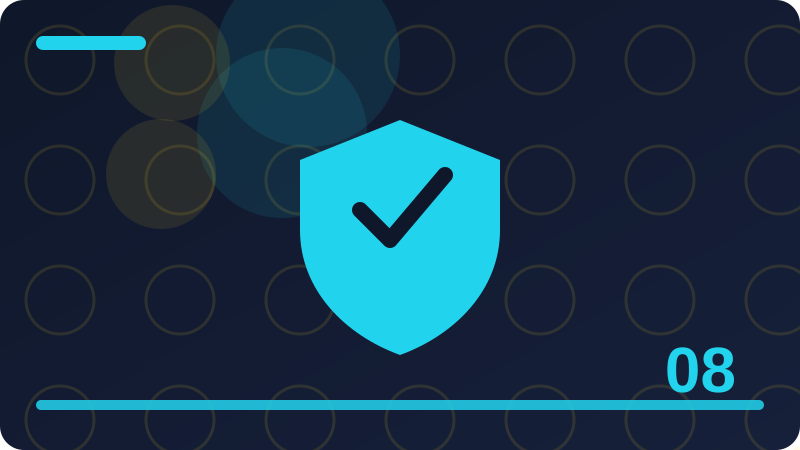

Chapter 8: Social Engineering and Manipulation Defence

This chapter teaches social engineering and manipulation defence in plain words, for everyday life, work and family. Every section explains one idea clearly, gives an everyday example, and ends with a question that helps you check your own understanding. You do not need special tools to follow it, and every code example is defensive only, for your own systems and files.
Section 1: What Social Engineering Really Means
This section is about what social engineering really means, and it belongs in social engineering and manipulation defence for a practical reason: small choices made in a hurry often decide whether you stay safe or hand an attacker an opening. Beginners sometimes think safety is about secret knowledge or clever software, but most of it is about noticing what is happening, slowing down, and following a simple check before you act. When you understand what social engineering really means, you can recognise the same pattern in different places, on different devices and in different messages, even when the details change. That transferable skill matters more than memorising one warning sign, because attackers change their wording, designs and stories all the time.
Think about what social engineering really means step by step. First, ask what is being asked of you, and whether that request makes sense from this sender, on this device, at this time. Second, look for independent evidence: a known address, a bookmark you created, an official app, a phone number you already trusted, or a person you can ask in real life. Third, notice pressure. Real services can wait while you verify, and real colleagues will accept a careful check. Pressure, secrecy, flattery and fear are not proof of danger by themselves, but they are reasons to pause, because honest requests rarely depend on stopping you from thinking. Finally, choose the safest next step, which is often to do nothing yet, close the page or message, and start again through a route you trust.
Imagine a normal day. You are busy, tired or distracted, and a message, page or device prompt asks you to act quickly about what social engineering really means. It looks familiar, it uses words you expect, and it promises to solve a problem or avoid trouble. In that moment, the easiest action feels helpful: click, reply, approve, download or share. A safer version of the same day looks almost identical, except for one pause. You stop, breathe, and ask one question: how can I check this without using the information in the message itself? That question changes the outcome. You might type an address yourself, call a known number, open the official app, or ask a trusted person. The extra minute is not wasted time; it is the protection itself, and it works even when you cannot explain every technical detail.
Put what social engineering really means into a habit you can actually keep. Write down your own rule in plain words, for example: I will not log in from a link in an unexpected message, I will not share a code with anyone who asks for it, or I will check updates only in my device settings. Share that rule with family or colleagues if it helps, because a shared rule is easier to follow under pressure than a private intention. Keep your devices and accounts tidy as well: remove apps and accounts you no longer use, use a password manager or another safe method for different passwords, turn on two-step verification where it is offered, and keep a backup of files that matter to you. None of these steps needs to be perfect on the first day.
Check: In your own words, how would you verify an urgent request from someone claiming authority, without being rude?
Section 2: Why People, Not Just Computers, Are Targeted
This section is about why people, not just computers, are targeted, and it belongs in social engineering and manipulation defence for a practical reason: small choices made in a hurry often decide whether you stay safe or hand an attacker an opening. Beginners sometimes think safety is about secret knowledge or clever software, but most of it is about noticing what is happening, slowing down, and following a simple check before you act. When you understand why people, not just computers, are targeted, you can recognise the same pattern in different places, on different devices and in different messages, even when the details change. That transferable skill matters more than memorising one warning sign, because attackers change their wording, designs and stories all the time.
Think about why people, not just computers, are targeted step by step. First, ask what is being asked of you, and whether that request makes sense from this sender, on this device, at this time. Second, look for independent evidence: a known address, a bookmark you created, an official app, a phone number you already trusted, or a person you can ask in real life. Third, notice pressure. Real services can wait while you verify, and real colleagues will accept a careful check. Pressure, secrecy, flattery and fear are not proof of danger by themselves, but they are reasons to pause, because honest requests rarely depend on stopping you from thinking. Finally, choose the safest next step, which is often to do nothing yet, close the page or message, and start again through a route you trust.
Imagine a normal day. You are busy, tired or distracted, and a message, page or device prompt asks you to act quickly about why people, not just computers, are targeted. It looks familiar, it uses words you expect, and it promises to solve a problem or avoid trouble. In that moment, the easiest action feels helpful: click, reply, approve, download or share. A safer version of the same day looks almost identical, except for one pause. You stop, breathe, and ask one question: how can I check this without using the information in the message itself? That question changes the outcome. You might type an address yourself, call a known number, open the official app, or ask a trusted person. The extra minute is not wasted time; it is the protection itself, and it works even when you cannot explain every technical detail.
Put why people, not just computers, are targeted into a habit you can actually keep. Write down your own rule in plain words, for example: I will not log in from a link in an unexpected message, I will not share a code with anyone who asks for it, or I will check updates only in my device settings. Share that rule with family or colleagues if it helps, because a shared rule is easier to follow under pressure than a private intention. Keep your devices and accounts tidy as well: remove apps and accounts you no longer use, use a password manager or another safe method for different passwords, turn on two-step verification where it is offered, and keep a backup of files that matter to you.
Check: In your own words, how would you verify an urgent request from someone claiming authority, without being rude?
Section 3: Authority Tricks and False Officials
This section is about authority tricks and false officials, and it belongs in social engineering and manipulation defence for a practical reason: small choices made in a hurry often decide whether you stay safe or hand an attacker an opening. Beginners sometimes think safety is about secret knowledge or clever software, but most of it is about noticing what is happening, slowing down, and following a simple check before you act. When you understand authority tricks and false officials, you can recognise the same pattern in different places, on different devices and in different messages, even when the details change. That transferable skill matters more than memorising one warning sign, because attackers change their wording, designs and stories all the time.
Think about authority tricks and false officials step by step. First, ask what is being asked of you, and whether that request makes sense from this sender, on this device, at this time. Second, look for independent evidence: a known address, a bookmark you created, an official app, a phone number you already trusted, or a person you can ask in real life. Third, notice pressure. Real services can wait while you verify, and real colleagues will accept a careful check. Pressure, secrecy, flattery and fear are not proof of danger by themselves, but they are reasons to pause, because honest requests rarely depend on stopping you from thinking. Finally, choose the safest next step, which is often to do nothing yet, close the page or message, and start again through a route you trust.
Imagine a normal day. You are busy, tired or distracted, and a message, page or device prompt asks you to act quickly about authority tricks and false officials. It looks familiar, it uses words you expect, and it promises to solve a problem or avoid trouble. In that moment, the easiest action feels helpful: click, reply, approve, download or share. A safer version of the same day looks almost identical, except for one pause. You stop, breathe, and ask one question: how can I check this without using the information in the message itself? That question changes the outcome. You might type an address yourself, call a known number, open the official app, or ask a trusted person. The extra minute is not wasted time; it is the protection itself, and it works even when you cannot explain every technical detail.
Put authority tricks and false officials into a habit you can actually keep. Write down your own rule in plain words, for example: I will not log in from a link in an unexpected message, I will not share a code with anyone who asks for it, or I will check updates only in my device settings. Share that rule with family or colleagues if it helps, because a shared rule is easier to follow under pressure than a private intention. Keep your devices and accounts tidy as well: remove apps and accounts you no longer use, use a password manager or another safe method for different passwords, turn on two-step verification where it is offered, and keep a backup of files that matter to you. None of these steps needs to be perfect on the first day.
# Defensive helper: a verification checklist for an urgent request.
# It records YOUR OWN decision process; it contacts nobody.
def verify_request(who, channel, known_contact):
print("Claimed sender:", who)
print("Channel used:", channel)
print("Known contact to check with:", known_contact)
print("Rule: pause, use the known contact, and do not use details from the message itself.")
verify_request("IT support", "unexpected phone call", "the office directory number")Check: In your own words, how would you verify an urgent request from someone claiming authority, without being rude?
Section 4: Urgency Tricks and False Deadlines
This section is about urgency tricks and false deadlines, and it belongs in social engineering and manipulation defence for a practical reason: small choices made in a hurry often decide whether you stay safe or hand an attacker an opening. Beginners sometimes think safety is about secret knowledge or clever software, but most of it is about noticing what is happening, slowing down, and following a simple check before you act. When you understand urgency tricks and false deadlines, you can recognise the same pattern in different places, on different devices and in different messages, even when the details change. That transferable skill matters more than memorising one warning sign, because attackers change their wording, designs and stories all the time.
Manipulation works because it uses normal human habits: wanting to help, fearing trouble, trusting authority and avoiding embarrassment. Attackers study those habits and build stories around them. You do not need to become suspicious of everyone. You need a pause, a check and a safe way to say no or verify first.
Think about urgency tricks and false deadlines step by step. First, ask what is being asked of you, and whether that request makes sense from this sender, on this device, at this time. Second, look for independent evidence: a known address, a bookmark you created, an official app, a phone number you already trusted, or a person you can ask in real life. Third, notice pressure. Real services can wait while you verify, and real colleagues will accept a careful check. Pressure, secrecy, flattery and fear are not proof of danger by themselves, but they are reasons to pause, because honest requests rarely depend on stopping you from thinking. Finally, choose the safest next step, which is often to do nothing yet, close the page or message, and start again through a route you trust.
Put urgency tricks and false deadlines into a habit you can actually keep. Write down your own rule in plain words, for example: I will not log in from a link in an unexpected message, I will not share a code with anyone who asks for it, or I will check updates only in my device settings. Share that rule with family or colleagues if it helps, because a shared rule is easier to follow under pressure than a private intention. Keep your devices and accounts tidy as well: remove apps and accounts you no longer use, use a password manager or another safe method for different passwords, turn on two-step verification where it is offered, and keep a backup of files that matter to you. None of these steps needs to be perfect on the first day. A steady, simple routine beats a complicated plan you abandon, and each safe choice makes the next one easier to remember.
A common mistake with urgency tricks and false deadlines is to rely on a single sign, such as a professional design, a padlock symbol, a familiar name, or a confident voice. Each of those can be copied or misused, so use at least two independent checks before you trust an important request. Another mistake is to feel embarrassed after a close call and stay silent.
Check: In your own words, how would you verify an urgent request from someone claiming authority, without being rude?
Section 5: Fear Tricks and Threats
This section is about fear tricks and threats, and it belongs in social engineering and manipulation defence for a practical reason: small choices made in a hurry often decide whether you stay safe or hand an attacker an opening. Beginners sometimes think safety is about secret knowledge or clever software, but most of it is about noticing what is happening, slowing down, and following a simple check before you act. When you understand fear tricks and threats, you can recognise the same pattern in different places, on different devices and in different messages, even when the details change. That transferable skill matters more than memorising one warning sign, because attackers change their wording, designs and stories all the time.
Think about fear tricks and threats step by step. First, ask what is being asked of you, and whether that request makes sense from this sender, on this device, at this time. Second, look for independent evidence: a known address, a bookmark you created, an official app, a phone number you already trusted, or a person you can ask in real life. Third, notice pressure. Real services can wait while you verify, and real colleagues will accept a careful check. Pressure, secrecy, flattery and fear are not proof of danger by themselves, but they are reasons to pause, because honest requests rarely depend on stopping you from thinking. Finally, choose the safest next step, which is often to do nothing yet, close the page or message, and start again through a route you trust.
Imagine a normal day. You are busy, tired or distracted, and a message, page or device prompt asks you to act quickly about fear tricks and threats. It looks familiar, it uses words you expect, and it promises to solve a problem or avoid trouble. In that moment, the easiest action feels helpful: click, reply, approve, download or share. A safer version of the same day looks almost identical, except for one pause. You stop, breathe, and ask one question: how can I check this without using the information in the message itself? That question changes the outcome. You might type an address yourself, call a known number, open the official app, or ask a trusted person. The extra minute is not wasted time; it is the protection itself, and it works even when you cannot explain every technical detail.
Put fear tricks and threats into a habit you can actually keep. Write down your own rule in plain words, for example: I will not log in from a link in an unexpected message, I will not share a code with anyone who asks for it, or I will check updates only in my device settings. Share that rule with family or colleagues if it helps, because a shared rule is easier to follow under pressure than a private intention. Keep your devices and accounts tidy as well: remove apps and accounts you no longer use, use a password manager or another safe method for different passwords, turn on two-step verification where it is offered, and keep a backup of files that matter to you. None of these steps needs to be perfect on the first day.
Check: In your own words, how would you verify an urgent request from someone claiming authority, without being rude?
Section 6: Kindness Tricks and False Help
This section is about kindness tricks and false help, and it belongs in social engineering and manipulation defence for a practical reason: small choices made in a hurry often decide whether you stay safe or hand an attacker an opening. Beginners sometimes think safety is about secret knowledge or clever software, but most of it is about noticing what is happening, slowing down, and following a simple check before you act. When you understand kindness tricks and false help, you can recognise the same pattern in different places, on different devices and in different messages, even when the details change. That transferable skill matters more than memorising one warning sign, because attackers change their wording, designs and stories all the time.
Think about kindness tricks and false help step by step. First, ask what is being asked of you, and whether that request makes sense from this sender, on this device, at this time. Second, look for independent evidence: a known address, a bookmark you created, an official app, a phone number you already trusted, or a person you can ask in real life. Third, notice pressure. Real services can wait while you verify, and real colleagues will accept a careful check. Pressure, secrecy, flattery and fear are not proof of danger by themselves, but they are reasons to pause, because honest requests rarely depend on stopping you from thinking. Finally, choose the safest next step, which is often to do nothing yet, close the page or message, and start again through a route you trust.
Imagine a normal day. You are busy, tired or distracted, and a message, page or device prompt asks you to act quickly about kindness tricks and false help. It looks familiar, it uses words you expect, and it promises to solve a problem or avoid trouble. In that moment, the easiest action feels helpful: click, reply, approve, download or share. A safer version of the same day looks almost identical, except for one pause. You stop, breathe, and ask one question: how can I check this without using the information in the message itself? That question changes the outcome. You might type an address yourself, call a known number, open the official app, or ask a trusted person. The extra minute is not wasted time; it is the protection itself, and it works even when you cannot explain every technical detail.
Put kindness tricks and false help into a habit you can actually keep. Write down your own rule in plain words, for example: I will not log in from a link in an unexpected message, I will not share a code with anyone who asks for it, or I will check updates only in my device settings. Share that rule with family or colleagues if it helps, because a shared rule is easier to follow under pressure than a private intention. Keep your devices and accounts tidy as well: remove apps and accounts you no longer use, use a password manager or another safe method for different passwords, turn on two-step verification where it is offered, and keep a backup of files that matter to you. None of these steps needs to be perfect on the first day.
# Defensive helper: a verification checklist for an urgent request.
# It records YOUR OWN decision process; it contacts nobody.
def verify_request(who, channel, known_contact):
print("Claimed sender:", who)
print("Channel used:", channel)
print("Known contact to check with:", known_contact)
print("Rule: pause, use the known contact, and do not use details from the message itself.")
verify_request("IT support", "unexpected phone call", "the office directory number")Check: In your own words, how would you verify an urgent request from someone claiming authority, without being rude?
Section 7: Curiosity Tricks and Tempting Bait
This section is about curiosity tricks and tempting bait, and it belongs in social engineering and manipulation defence for a practical reason: small choices made in a hurry often decide whether you stay safe or hand an attacker an opening. Beginners sometimes think safety is about secret knowledge or clever software, but most of it is about noticing what is happening, slowing down, and following a simple check before you act. When you understand curiosity tricks and tempting bait, you can recognise the same pattern in different places, on different devices and in different messages, even when the details change. That transferable skill matters more than memorising one warning sign, because attackers change their wording, designs and stories all the time.
Think about curiosity tricks and tempting bait step by step. First, ask what is being asked of you, and whether that request makes sense from this sender, on this device, at this time. Second, look for independent evidence: a known address, a bookmark you created, an official app, a phone number you already trusted, or a person you can ask in real life. Third, notice pressure. Real services can wait while you verify, and real colleagues will accept a careful check. Pressure, secrecy, flattery and fear are not proof of danger by themselves, but they are reasons to pause, because honest requests rarely depend on stopping you from thinking. Finally, choose the safest next step, which is often to do nothing yet, close the page or message, and start again through a route you trust.
Imagine a normal day. You are busy, tired or distracted, and a message, page or device prompt asks you to act quickly about curiosity tricks and tempting bait. It looks familiar, it uses words you expect, and it promises to solve a problem or avoid trouble. In that moment, the easiest action feels helpful: click, reply, approve, download or share. A safer version of the same day looks almost identical, except for one pause. You stop, breathe, and ask one question: how can I check this without using the information in the message itself? That question changes the outcome. You might type an address yourself, call a known number, open the official app, or ask a trusted person. The extra minute is not wasted time; it is the protection itself, and it works even when you cannot explain every technical detail.
Put curiosity tricks and tempting bait into a habit you can actually keep. Write down your own rule in plain words, for example: I will not log in from a link in an unexpected message, I will not share a code with anyone who asks for it, or I will check updates only in my device settings. Share that rule with family or colleagues if it helps, because a shared rule is easier to follow under pressure than a private intention. Keep your devices and accounts tidy as well: remove apps and accounts you no longer use, use a password manager or another safe method for different passwords, turn on two-step verification where it is offered, and keep a backup of files that matter to you. None of these steps needs to be perfect on the first day.
Check: In your own words, how would you verify an urgent request from someone claiming authority, without being rude?
Section 8: Flattery and False Friendship
This section is about flattery and false friendship, and it belongs in social engineering and manipulation defence for a practical reason: small choices made in a hurry often decide whether you stay safe or hand an attacker an opening. Beginners sometimes think safety is about secret knowledge or clever software, but most of it is about noticing what is happening, slowing down, and following a simple check before you act. When you understand flattery and false friendship, you can recognise the same pattern in different places, on different devices and in different messages, even when the details change. That transferable skill matters more than memorising one warning sign, because attackers change their wording, designs and stories all the time.
Strong defence is mostly process, not cleverness. Agree in advance how your bank, your workplace and your family will verify requests. Use a second channel, a known number or an in-person check. When a request breaks the agreed process, that break is itself the warning sign, whatever the story says.
Think about flattery and false friendship step by step. First, ask what is being asked of you, and whether that request makes sense from this sender, on this device, at this time. Second, look for independent evidence: a known address, a bookmark you created, an official app, a phone number you already trusted, or a person you can ask in real life. Third, notice pressure. Real services can wait while you verify, and real colleagues will accept a careful check. Pressure, secrecy, flattery and fear are not proof of danger by themselves, but they are reasons to pause, because honest requests rarely depend on stopping you from thinking. Finally, choose the safest next step, which is often to do nothing yet, close the page or message, and start again through a route you trust.
Put flattery and false friendship into a habit you can actually keep. Write down your own rule in plain words, for example: I will not log in from a link in an unexpected message, I will not share a code with anyone who asks for it, or I will check updates only in my device settings. Share that rule with family or colleagues if it helps, because a shared rule is easier to follow under pressure than a private intention. Keep your devices and accounts tidy as well: remove apps and accounts you no longer use, use a password manager or another safe method for different passwords, turn on two-step verification where it is offered, and keep a backup of files that matter to you. None of these steps needs to be perfect on the first day. A steady, simple routine beats a complicated plan you abandon, and each safe choice makes the next one easier to remember.
A common mistake with flattery and false friendship is to rely on a single sign, such as a professional design, a padlock symbol, a familiar name, or a confident voice. Each of those can be copied or misused, so use at least two independent checks before you trust an important request. Another mistake is to feel embarrassed after a close call and stay silent.
Check: In your own words, how would you verify an urgent request from someone claiming authority, without being rude?
Section 9: Impersonation on the Phone
This section is about impersonation on the phone, and it belongs in social engineering and manipulation defence for a practical reason: small choices made in a hurry often decide whether you stay safe or hand an attacker an opening. Beginners sometimes think safety is about secret knowledge or clever software, but most of it is about noticing what is happening, slowing down, and following a simple check before you act. When you understand impersonation on the phone, you can recognise the same pattern in different places, on different devices and in different messages, even when the details change. That transferable skill matters more than memorising one warning sign, because attackers change their wording, designs and stories all the time.
Think about impersonation on the phone step by step. First, ask what is being asked of you, and whether that request makes sense from this sender, on this device, at this time. Second, look for independent evidence: a known address, a bookmark you created, an official app, a phone number you already trusted, or a person you can ask in real life. Third, notice pressure. Real services can wait while you verify, and real colleagues will accept a careful check. Pressure, secrecy, flattery and fear are not proof of danger by themselves, but they are reasons to pause, because honest requests rarely depend on stopping you from thinking. Finally, choose the safest next step, which is often to do nothing yet, close the page or message, and start again through a route you trust.
Imagine a normal day. You are busy, tired or distracted, and a message, page or device prompt asks you to act quickly about impersonation on the phone. It looks familiar, it uses words you expect, and it promises to solve a problem or avoid trouble. In that moment, the easiest action feels helpful: click, reply, approve, download or share. A safer version of the same day looks almost identical, except for one pause. You stop, breathe, and ask one question: how can I check this without using the information in the message itself? That question changes the outcome. You might type an address yourself, call a known number, open the official app, or ask a trusted person. The extra minute is not wasted time; it is the protection itself, and it works even when you cannot explain every technical detail.
Put impersonation on the phone into a habit you can actually keep. Write down your own rule in plain words, for example: I will not log in from a link in an unexpected message, I will not share a code with anyone who asks for it, or I will check updates only in my device settings. Share that rule with family or colleagues if it helps, because a shared rule is easier to follow under pressure than a private intention. Keep your devices and accounts tidy as well: remove apps and accounts you no longer use, use a password manager or another safe method for different passwords, turn on two-step verification where it is offered, and keep a backup of files that matter to you. None of these steps needs to be perfect on the first day.
# Defensive helper: a verification checklist for an urgent request.
# It records YOUR OWN decision process; it contacts nobody.
def verify_request(who, channel, known_contact):
print("Claimed sender:", who)
print("Channel used:", channel)
print("Known contact to check with:", known_contact)
print("Rule: pause, use the known contact, and do not use details from the message itself.")
verify_request("IT support", "unexpected phone call", "the office directory number")Check: In your own words, how would you verify an urgent request from someone claiming authority, without being rude?
Section 10: Impersonation by Text Message
This section is about impersonation by text message, and it belongs in social engineering and manipulation defence for a practical reason: small choices made in a hurry often decide whether you stay safe or hand an attacker an opening. Beginners sometimes think safety is about secret knowledge or clever software, but most of it is about noticing what is happening, slowing down, and following a simple check before you act. When you understand impersonation by text message, you can recognise the same pattern in different places, on different devices and in different messages, even when the details change. That transferable skill matters more than memorising one warning sign, because attackers change their wording, designs and stories all the time.
Think about impersonation by text message step by step. First, ask what is being asked of you, and whether that request makes sense from this sender, on this device, at this time. Second, look for independent evidence: a known address, a bookmark you created, an official app, a phone number you already trusted, or a person you can ask in real life. Third, notice pressure. Real services can wait while you verify, and real colleagues will accept a careful check. Pressure, secrecy, flattery and fear are not proof of danger by themselves, but they are reasons to pause, because honest requests rarely depend on stopping you from thinking. Finally, choose the safest next step, which is often to do nothing yet, close the page or message, and start again through a route you trust.
Imagine a normal day. You are busy, tired or distracted, and a message, page or device prompt asks you to act quickly about impersonation by text message. It looks familiar, it uses words you expect, and it promises to solve a problem or avoid trouble. In that moment, the easiest action feels helpful: click, reply, approve, download or share. A safer version of the same day looks almost identical, except for one pause. You stop, breathe, and ask one question: how can I check this without using the information in the message itself? That question changes the outcome. You might type an address yourself, call a known number, open the official app, or ask a trusted person. The extra minute is not wasted time; it is the protection itself, and it works even when you cannot explain every technical detail.
Put impersonation by text message into a habit you can actually keep. Write down your own rule in plain words, for example: I will not log in from a link in an unexpected message, I will not share a code with anyone who asks for it, or I will check updates only in my device settings. Share that rule with family or colleagues if it helps, because a shared rule is easier to follow under pressure than a private intention. Keep your devices and accounts tidy as well: remove apps and accounts you no longer use, use a password manager or another safe method for different passwords, turn on two-step verification where it is offered, and keep a backup of files that matter to you. None of these steps needs to be perfect on the first day.
Check: In your own words, how would you verify an urgent request from someone claiming authority, without being rude?
Section 11: Impersonation on Social Media
This section is about impersonation on social media, and it belongs in social engineering and manipulation defence for a practical reason: small choices made in a hurry often decide whether you stay safe or hand an attacker an opening. Beginners sometimes think safety is about secret knowledge or clever software, but most of it is about noticing what is happening, slowing down, and following a simple check before you act. When you understand impersonation on social media, you can recognise the same pattern in different places, on different devices and in different messages, even when the details change. That transferable skill matters more than memorising one warning sign, because attackers change their wording, designs and stories all the time.
Think about impersonation on social media step by step. First, ask what is being asked of you, and whether that request makes sense from this sender, on this device, at this time. Second, look for independent evidence: a known address, a bookmark you created, an official app, a phone number you already trusted, or a person you can ask in real life. Third, notice pressure. Real services can wait while you verify, and real colleagues will accept a careful check. Pressure, secrecy, flattery and fear are not proof of danger by themselves, but they are reasons to pause, because honest requests rarely depend on stopping you from thinking. Finally, choose the safest next step, which is often to do nothing yet, close the page or message, and start again through a route you trust.
Imagine a normal day. You are busy, tired or distracted, and a message, page or device prompt asks you to act quickly about impersonation on social media. It looks familiar, it uses words you expect, and it promises to solve a problem or avoid trouble. In that moment, the easiest action feels helpful: click, reply, approve, download or share. A safer version of the same day looks almost identical, except for one pause. You stop, breathe, and ask one question: how can I check this without using the information in the message itself? That question changes the outcome. You might type an address yourself, call a known number, open the official app, or ask a trusted person. The extra minute is not wasted time; it is the protection itself, and it works even when you cannot explain every technical detail.
Put impersonation on social media into a habit you can actually keep. Write down your own rule in plain words, for example: I will not log in from a link in an unexpected message, I will not share a code with anyone who asks for it, or I will check updates only in my device settings. Share that rule with family or colleagues if it helps, because a shared rule is easier to follow under pressure than a private intention. Keep your devices and accounts tidy as well: remove apps and accounts you no longer use, use a password manager or another safe method for different passwords, turn on two-step verification where it is offered, and keep a backup of files that matter to you. None of these steps needs to be perfect on the first day.
Check: In your own words, how would you verify an urgent request from someone claiming authority, without being rude?
Section 12: Fake Support Calls
This section is about fake support calls, and it belongs in social engineering and manipulation defence for a practical reason: small choices made in a hurry often decide whether you stay safe or hand an attacker an opening. Beginners sometimes think safety is about secret knowledge or clever software, but most of it is about noticing what is happening, slowing down, and following a simple check before you act. When you understand fake support calls, you can recognise the same pattern in different places, on different devices and in different messages, even when the details change. That transferable skill matters more than memorising one warning sign, because attackers change their wording, designs and stories all the time.
Social engineering is a plain name for a simple idea: instead of breaking a computer, an attacker tries to persuade a person. They may pretend to be helpful, official, urgent or friendly, and they use that role to get a password, a code, a payment or access to a system. Defence starts when you notice the persuasion itself, not only the technical detail.
Think about fake support calls step by step. First, ask what is being asked of you, and whether that request makes sense from this sender, on this device, at this time. Second, look for independent evidence: a known address, a bookmark you created, an official app, a phone number you already trusted, or a person you can ask in real life. Third, notice pressure. Real services can wait while you verify, and real colleagues will accept a careful check. Pressure, secrecy, flattery and fear are not proof of danger by themselves, but they are reasons to pause, because honest requests rarely depend on stopping you from thinking. Finally, choose the safest next step, which is often to do nothing yet, close the page or message, and start again through a route you trust.
Put fake support calls into a habit you can actually keep. Write down your own rule in plain words, for example: I will not log in from a link in an unexpected message, I will not share a code with anyone who asks for it, or I will check updates only in my device settings. Share that rule with family or colleagues if it helps, because a shared rule is easier to follow under pressure than a private intention. Keep your devices and accounts tidy as well: remove apps and accounts you no longer use, use a password manager or another safe method for different passwords, turn on two-step verification where it is offered, and keep a backup of files that matter to you. None of these steps needs to be perfect on the first day. A steady, simple routine beats a complicated plan you abandon, and each safe choice makes the next one easier to remember.
A common mistake with fake support calls is to rely on a single sign, such as a professional design, a padlock symbol, a familiar name, or a confident voice. Each of those can be copied or misused, so use at least two independent checks before you trust an important request. Another mistake is to feel embarrassed after a close call and stay silent.
# Defensive helper: a verification checklist for an urgent request.
# It records YOUR OWN decision process; it contacts nobody.
def verify_request(who, channel, known_contact):
print("Claimed sender:", who)
print("Channel used:", channel)
print("Known contact to check with:", known_contact)
print("Rule: pause, use the known contact, and do not use details from the message itself.")
verify_request("IT support", "unexpected phone call", "the office directory number")Check: In your own words, how would you verify an urgent request from someone claiming authority, without being rude?
Section 13: Fake Delivery and Service Visits
This section is about fake delivery and service visits, and it belongs in social engineering and manipulation defence for a practical reason: small choices made in a hurry often decide whether you stay safe or hand an attacker an opening. Beginners sometimes think safety is about secret knowledge or clever software, but most of it is about noticing what is happening, slowing down, and following a simple check before you act. When you understand fake delivery and service visits, you can recognise the same pattern in different places, on different devices and in different messages, even when the details change. That transferable skill matters more than memorising one warning sign, because attackers change their wording, designs and stories all the time.
Think about fake delivery and service visits step by step. First, ask what is being asked of you, and whether that request makes sense from this sender, on this device, at this time. Second, look for independent evidence: a known address, a bookmark you created, an official app, a phone number you already trusted, or a person you can ask in real life. Third, notice pressure. Real services can wait while you verify, and real colleagues will accept a careful check. Pressure, secrecy, flattery and fear are not proof of danger by themselves, but they are reasons to pause, because honest requests rarely depend on stopping you from thinking. Finally, choose the safest next step, which is often to do nothing yet, close the page or message, and start again through a route you trust.
Imagine a normal day. You are busy, tired or distracted, and a message, page or device prompt asks you to act quickly about fake delivery and service visits. It looks familiar, it uses words you expect, and it promises to solve a problem or avoid trouble. In that moment, the easiest action feels helpful: click, reply, approve, download or share. A safer version of the same day looks almost identical, except for one pause. You stop, breathe, and ask one question: how can I check this without using the information in the message itself? That question changes the outcome. You might type an address yourself, call a known number, open the official app, or ask a trusted person. The extra minute is not wasted time; it is the protection itself, and it works even when you cannot explain every technical detail.
Put fake delivery and service visits into a habit you can actually keep. Write down your own rule in plain words, for example: I will not log in from a link in an unexpected message, I will not share a code with anyone who asks for it, or I will check updates only in my device settings. Share that rule with family or colleagues if it helps, because a shared rule is easier to follow under pressure than a private intention. Keep your devices and accounts tidy as well: remove apps and accounts you no longer use, use a password manager or another safe method for different passwords, turn on two-step verification where it is offered, and keep a backup of files that matter to you. None of these steps needs to be perfect on the first day.
Check: In your own words, how would you verify an urgent request from someone claiming authority, without being rude?
Section 14: Tailgating and Following Someone Inside
This section is about tailgating and following someone inside, and it belongs in social engineering and manipulation defence for a practical reason: small choices made in a hurry often decide whether you stay safe or hand an attacker an opening. Beginners sometimes think safety is about secret knowledge or clever software, but most of it is about noticing what is happening, slowing down, and following a simple check before you act. When you understand tailgating and following someone inside, you can recognise the same pattern in different places, on different devices and in different messages, even when the details change. That transferable skill matters more than memorising one warning sign, because attackers change their wording, designs and stories all the time.
Think about tailgating and following someone inside step by step. First, ask what is being asked of you, and whether that request makes sense from this sender, on this device, at this time. Second, look for independent evidence: a known address, a bookmark you created, an official app, a phone number you already trusted, or a person you can ask in real life. Third, notice pressure. Real services can wait while you verify, and real colleagues will accept a careful check. Pressure, secrecy, flattery and fear are not proof of danger by themselves, but they are reasons to pause, because honest requests rarely depend on stopping you from thinking. Finally, choose the safest next step, which is often to do nothing yet, close the page or message, and start again through a route you trust.
Imagine a normal day. You are busy, tired or distracted, and a message, page or device prompt asks you to act quickly about tailgating and following someone inside. It looks familiar, it uses words you expect, and it promises to solve a problem or avoid trouble. In that moment, the easiest action feels helpful: click, reply, approve, download or share. A safer version of the same day looks almost identical, except for one pause. You stop, breathe, and ask one question: how can I check this without using the information in the message itself? That question changes the outcome. You might type an address yourself, call a known number, open the official app, or ask a trusted person. The extra minute is not wasted time; it is the protection itself, and it works even when you cannot explain every technical detail.
Put tailgating and following someone inside into a habit you can actually keep. Write down your own rule in plain words, for example: I will not log in from a link in an unexpected message, I will not share a code with anyone who asks for it, or I will check updates only in my device settings. Share that rule with family or colleagues if it helps, because a shared rule is easier to follow under pressure than a private intention. Keep your devices and accounts tidy as well: remove apps and accounts you no longer use, use a password manager or another safe method for different passwords, turn on two-step verification where it is offered, and keep a backup of files that matter to you. None of these steps needs to be perfect on the first day.
Check: In your own words, how would you verify an urgent request from someone claiming authority, without being rude?
Section 15: Shoulder Surfing in Public Places
This section is about shoulder surfing in public places, and it belongs in social engineering and manipulation defence for a practical reason: small choices made in a hurry often decide whether you stay safe or hand an attacker an opening. Beginners sometimes think safety is about secret knowledge or clever software, but most of it is about noticing what is happening, slowing down, and following a simple check before you act. When you understand shoulder surfing in public places, you can recognise the same pattern in different places, on different devices and in different messages, even when the details change. That transferable skill matters more than memorising one warning sign, because attackers change their wording, designs and stories all the time.
Think about shoulder surfing in public places step by step. First, ask what is being asked of you, and whether that request makes sense from this sender, on this device, at this time. Second, look for independent evidence: a known address, a bookmark you created, an official app, a phone number you already trusted, or a person you can ask in real life. Third, notice pressure. Real services can wait while you verify, and real colleagues will accept a careful check. Pressure, secrecy, flattery and fear are not proof of danger by themselves, but they are reasons to pause, because honest requests rarely depend on stopping you from thinking. Finally, choose the safest next step, which is often to do nothing yet, close the page or message, and start again through a route you trust.
Imagine a normal day. You are busy, tired or distracted, and a message, page or device prompt asks you to act quickly about shoulder surfing in public places. It looks familiar, it uses words you expect, and it promises to solve a problem or avoid trouble. In that moment, the easiest action feels helpful: click, reply, approve, download or share. A safer version of the same day looks almost identical, except for one pause. You stop, breathe, and ask one question: how can I check this without using the information in the message itself? That question changes the outcome. You might type an address yourself, call a known number, open the official app, or ask a trusted person. The extra minute is not wasted time; it is the protection itself, and it works even when you cannot explain every technical detail.
Put shoulder surfing in public places into a habit you can actually keep. Write down your own rule in plain words, for example: I will not log in from a link in an unexpected message, I will not share a code with anyone who asks for it, or I will check updates only in my device settings. Share that rule with family or colleagues if it helps, because a shared rule is easier to follow under pressure than a private intention. Keep your devices and accounts tidy as well: remove apps and accounts you no longer use, use a password manager or another safe method for different passwords, turn on two-step verification where it is offered, and keep a backup of files that matter to you. None of these steps needs to be perfect on the first day.
# Defensive helper: a verification checklist for an urgent request.
# It records YOUR OWN decision process; it contacts nobody.
def verify_request(who, channel, known_contact):
print("Claimed sender:", who)
print("Channel used:", channel)
print("Known contact to check with:", known_contact)
print("Rule: pause, use the known contact, and do not use details from the message itself.")
verify_request("IT support", "unexpected phone call", "the office directory number")Check: In your own words, how would you verify an urgent request from someone claiming authority, without being rude?
Section 16: Eavesdropping and Loose Talk
This section is about eavesdropping and loose talk, and it belongs in social engineering and manipulation defence for a practical reason: small choices made in a hurry often decide whether you stay safe or hand an attacker an opening. Beginners sometimes think safety is about secret knowledge or clever software, but most of it is about noticing what is happening, slowing down, and following a simple check before you act. When you understand eavesdropping and loose talk, you can recognise the same pattern in different places, on different devices and in different messages, even when the details change. That transferable skill matters more than memorising one warning sign, because attackers change their wording, designs and stories all the time.
Manipulation works because it uses normal human habits: wanting to help, fearing trouble, trusting authority and avoiding embarrassment. Attackers study those habits and build stories around them. You do not need to become suspicious of everyone. You need a pause, a check and a safe way to say no or verify first.
Think about eavesdropping and loose talk step by step. First, ask what is being asked of you, and whether that request makes sense from this sender, on this device, at this time. Second, look for independent evidence: a known address, a bookmark you created, an official app, a phone number you already trusted, or a person you can ask in real life. Third, notice pressure. Real services can wait while you verify, and real colleagues will accept a careful check. Pressure, secrecy, flattery and fear are not proof of danger by themselves, but they are reasons to pause, because honest requests rarely depend on stopping you from thinking. Finally, choose the safest next step, which is often to do nothing yet, close the page or message, and start again through a route you trust.
Put eavesdropping and loose talk into a habit you can actually keep. Write down your own rule in plain words, for example: I will not log in from a link in an unexpected message, I will not share a code with anyone who asks for it, or I will check updates only in my device settings. Share that rule with family or colleagues if it helps, because a shared rule is easier to follow under pressure than a private intention. Keep your devices and accounts tidy as well: remove apps and accounts you no longer use, use a password manager or another safe method for different passwords, turn on two-step verification where it is offered, and keep a backup of files that matter to you. None of these steps needs to be perfect on the first day. A steady, simple routine beats a complicated plan you abandon, and each safe choice makes the next one easier to remember.
A common mistake with eavesdropping and loose talk is to rely on a single sign, such as a professional design, a padlock symbol, a familiar name, or a confident voice. Each of those can be copied or misused, so use at least two independent checks before you trust an important request. Another mistake is to feel embarrassed after a close call and stay silent.
Check: In your own words, how would you verify an urgent request from someone claiming authority, without being rude?
Section 17: Dumpster Diving and Discarded Papers
This section is about dumpster diving and discarded papers, and it belongs in social engineering and manipulation defence for a practical reason: small choices made in a hurry often decide whether you stay safe or hand an attacker an opening. Beginners sometimes think safety is about secret knowledge or clever software, but most of it is about noticing what is happening, slowing down, and following a simple check before you act. When you understand dumpster diving and discarded papers, you can recognise the same pattern in different places, on different devices and in different messages, even when the details change. That transferable skill matters more than memorising one warning sign, because attackers change their wording, designs and stories all the time.
Think about dumpster diving and discarded papers step by step. First, ask what is being asked of you, and whether that request makes sense from this sender, on this device, at this time. Second, look for independent evidence: a known address, a bookmark you created, an official app, a phone number you already trusted, or a person you can ask in real life. Third, notice pressure. Real services can wait while you verify, and real colleagues will accept a careful check. Pressure, secrecy, flattery and fear are not proof of danger by themselves, but they are reasons to pause, because honest requests rarely depend on stopping you from thinking. Finally, choose the safest next step, which is often to do nothing yet, close the page or message, and start again through a route you trust.
Imagine a normal day. You are busy, tired or distracted, and a message, page or device prompt asks you to act quickly about dumpster diving and discarded papers. It looks familiar, it uses words you expect, and it promises to solve a problem or avoid trouble. In that moment, the easiest action feels helpful: click, reply, approve, download or share. A safer version of the same day looks almost identical, except for one pause. You stop, breathe, and ask one question: how can I check this without using the information in the message itself? That question changes the outcome. You might type an address yourself, call a known number, open the official app, or ask a trusted person. The extra minute is not wasted time; it is the protection itself, and it works even when you cannot explain every technical detail.
Put dumpster diving and discarded papers into a habit you can actually keep. Write down your own rule in plain words, for example: I will not log in from a link in an unexpected message, I will not share a code with anyone who asks for it, or I will check updates only in my device settings. Share that rule with family or colleagues if it helps, because a shared rule is easier to follow under pressure than a private intention. Keep your devices and accounts tidy as well: remove apps and accounts you no longer use, use a password manager or another safe method for different passwords, turn on two-step verification where it is offered, and keep a backup of files that matter to you. None of these steps needs to be perfect on the first day.
Check: In your own words, how would you verify an urgent request from someone claiming authority, without being rude?
Section 18: Pretexting: A False Story With a Goal
This section is about pretexting: a false story with a goal, and it belongs in social engineering and manipulation defence for a practical reason: small choices made in a hurry often decide whether you stay safe or hand an attacker an opening. Beginners sometimes think safety is about secret knowledge or clever software, but most of it is about noticing what is happening, slowing down, and following a simple check before you act. When you understand pretexting: a false story with a goal, you can recognise the same pattern in different places, on different devices and in different messages, even when the details change. That transferable skill matters more than memorising one warning sign, because attackers change their wording, designs and stories all the time.
Think about pretexting: a false story with a goal step by step. First, ask what is being asked of you, and whether that request makes sense from this sender, on this device, at this time. Second, look for independent evidence: a known address, a bookmark you created, an official app, a phone number you already trusted, or a person you can ask in real life. Third, notice pressure. Real services can wait while you verify, and real colleagues will accept a careful check. Pressure, secrecy, flattery and fear are not proof of danger by themselves, but they are reasons to pause, because honest requests rarely depend on stopping you from thinking. Finally, choose the safest next step, which is often to do nothing yet, close the page or message, and start again through a route you trust.
Imagine a normal day. You are busy, tired or distracted, and a message, page or device prompt asks you to act quickly about pretexting: a false story with a goal. It looks familiar, it uses words you expect, and it promises to solve a problem or avoid trouble. In that moment, the easiest action feels helpful: click, reply, approve, download or share. A safer version of the same day looks almost identical, except for one pause. You stop, breathe, and ask one question: how can I check this without using the information in the message itself? That question changes the outcome. You might type an address yourself, call a known number, open the official app, or ask a trusted person. The extra minute is not wasted time; it is the protection itself, and it works even when you cannot explain every technical detail.
Put pretexting: a false story with a goal into a habit you can actually keep. Write down your own rule in plain words, for example: I will not log in from a link in an unexpected message, I will not share a code with anyone who asks for it, or I will check updates only in my device settings. Share that rule with family or colleagues if it helps, because a shared rule is easier to follow under pressure than a private intention. Keep your devices and accounts tidy as well: remove apps and accounts you no longer use, use a password manager or another safe method for different passwords, turn on two-step verification where it is offered, and keep a backup of files that matter to you.
# Defensive helper: a verification checklist for an urgent request.
# It records YOUR OWN decision process; it contacts nobody.
def verify_request(who, channel, known_contact):
print("Claimed sender:", who)
print("Channel used:", channel)
print("Known contact to check with:", known_contact)
print("Rule: pause, use the known contact, and do not use details from the message itself.")
verify_request("IT support", "unexpected phone call", "the office directory number")Check: In your own words, how would you verify an urgent request from someone claiming authority, without being rude?
Section 19: Baiting With Free Gifts and Devices
This section is about baiting with free gifts and devices, and it belongs in social engineering and manipulation defence for a practical reason: small choices made in a hurry often decide whether you stay safe or hand an attacker an opening. Beginners sometimes think safety is about secret knowledge or clever software, but most of it is about noticing what is happening, slowing down, and following a simple check before you act. When you understand baiting with free gifts and devices, you can recognise the same pattern in different places, on different devices and in different messages, even when the details change. That transferable skill matters more than memorising one warning sign, because attackers change their wording, designs and stories all the time.
Think about baiting with free gifts and devices step by step. First, ask what is being asked of you, and whether that request makes sense from this sender, on this device, at this time. Second, look for independent evidence: a known address, a bookmark you created, an official app, a phone number you already trusted, or a person you can ask in real life. Third, notice pressure. Real services can wait while you verify, and real colleagues will accept a careful check. Pressure, secrecy, flattery and fear are not proof of danger by themselves, but they are reasons to pause, because honest requests rarely depend on stopping you from thinking. Finally, choose the safest next step, which is often to do nothing yet, close the page or message, and start again through a route you trust.
Imagine a normal day. You are busy, tired or distracted, and a message, page or device prompt asks you to act quickly about baiting with free gifts and devices. It looks familiar, it uses words you expect, and it promises to solve a problem or avoid trouble. In that moment, the easiest action feels helpful: click, reply, approve, download or share. A safer version of the same day looks almost identical, except for one pause. You stop, breathe, and ask one question: how can I check this without using the information in the message itself? That question changes the outcome. You might type an address yourself, call a known number, open the official app, or ask a trusted person. The extra minute is not wasted time; it is the protection itself, and it works even when you cannot explain every technical detail.
Put baiting with free gifts and devices into a habit you can actually keep. Write down your own rule in plain words, for example: I will not log in from a link in an unexpected message, I will not share a code with anyone who asks for it, or I will check updates only in my device settings. Share that rule with family or colleagues if it helps, because a shared rule is easier to follow under pressure than a private intention. Keep your devices and accounts tidy as well: remove apps and accounts you no longer use, use a password manager or another safe method for different passwords, turn on two-step verification where it is offered, and keep a backup of files that matter to you.
Check: In your own words, how would you verify an urgent request from someone claiming authority, without being rude?
Section 20: Quid Pro Quo: A Favour for Access
This section is about quid pro quo: a favour for access, and it belongs in social engineering and manipulation defence for a practical reason: small choices made in a hurry often decide whether you stay safe or hand an attacker an opening. Beginners sometimes think safety is about secret knowledge or clever software, but most of it is about noticing what is happening, slowing down, and following a simple check before you act. When you understand quid pro quo: a favour for access, you can recognise the same pattern in different places, on different devices and in different messages, even when the details change. That transferable skill matters more than memorising one warning sign, because attackers change their wording, designs and stories all the time.
Strong defence is mostly process, not cleverness. Agree in advance how your bank, your workplace and your family will verify requests. Use a second channel, a known number or an in-person check. When a request breaks the agreed process, that break is itself the warning sign, whatever the story says.
Think about quid pro quo: a favour for access step by step. First, ask what is being asked of you, and whether that request makes sense from this sender, on this device, at this time. Second, look for independent evidence: a known address, a bookmark you created, an official app, a phone number you already trusted, or a person you can ask in real life. Third, notice pressure. Real services can wait while you verify, and real colleagues will accept a careful check. Pressure, secrecy, flattery and fear are not proof of danger by themselves, but they are reasons to pause, because honest requests rarely depend on stopping you from thinking. Finally, choose the safest next step, which is often to do nothing yet, close the page or message, and start again through a route you trust.
Put quid pro quo: a favour for access into a habit you can actually keep. Write down your own rule in plain words, for example: I will not log in from a link in an unexpected message, I will not share a code with anyone who asks for it, or I will check updates only in my device settings. Share that rule with family or colleagues if it helps, because a shared rule is easier to follow under pressure than a private intention. Keep your devices and accounts tidy as well: remove apps and accounts you no longer use, use a password manager or another safe method for different passwords, turn on two-step verification where it is offered, and keep a backup of files that matter to you. None of these steps needs to be perfect on the first day. A steady, simple routine beats a complicated plan you abandon, and each safe choice makes the next one easier to remember.
A common mistake with quid pro quo: a favour for access is to rely on a single sign, such as a professional design, a padlock symbol, a familiar name, or a confident voice. Each of those can be copied or misused, so use at least two independent checks before you trust an important request.
Check: In your own words, how would you verify an urgent request from someone claiming authority, without being rude?
Section 21: Vishing, Smishing and Phishing Compared
This section is about vishing, smishing and phishing compared, and it belongs in social engineering and manipulation defence for a practical reason: small choices made in a hurry often decide whether you stay safe or hand an attacker an opening. Beginners sometimes think safety is about secret knowledge or clever software, but most of it is about noticing what is happening, slowing down, and following a simple check before you act. When you understand vishing, smishing and phishing compared, you can recognise the same pattern in different places, on different devices and in different messages, even when the details change. That transferable skill matters more than memorising one warning sign, because attackers change their wording, designs and stories all the time.
Think about vishing, smishing and phishing compared step by step. First, ask what is being asked of you, and whether that request makes sense from this sender, on this device, at this time. Second, look for independent evidence: a known address, a bookmark you created, an official app, a phone number you already trusted, or a person you can ask in real life. Third, notice pressure. Real services can wait while you verify, and real colleagues will accept a careful check. Pressure, secrecy, flattery and fear are not proof of danger by themselves, but they are reasons to pause, because honest requests rarely depend on stopping you from thinking. Finally, choose the safest next step, which is often to do nothing yet, close the page or message, and start again through a route you trust.
Imagine a normal day. You are busy, tired or distracted, and a message, page or device prompt asks you to act quickly about vishing, smishing and phishing compared. It looks familiar, it uses words you expect, and it promises to solve a problem or avoid trouble. In that moment, the easiest action feels helpful: click, reply, approve, download or share. A safer version of the same day looks almost identical, except for one pause. You stop, breathe, and ask one question: how can I check this without using the information in the message itself? That question changes the outcome. You might type an address yourself, call a known number, open the official app, or ask a trusted person. The extra minute is not wasted time; it is the protection itself, and it works even when you cannot explain every technical detail.
Put vishing, smishing and phishing compared into a habit you can actually keep. Write down your own rule in plain words, for example: I will not log in from a link in an unexpected message, I will not share a code with anyone who asks for it, or I will check updates only in my device settings. Share that rule with family or colleagues if it helps, because a shared rule is easier to follow under pressure than a private intention. Keep your devices and accounts tidy as well: remove apps and accounts you no longer use, use a password manager or another safe method for different passwords, turn on two-step verification where it is offered, and keep a backup of files that matter to you. None of these steps needs to be perfect on the first day.
# Defensive helper: a verification checklist for an urgent request.
# It records YOUR OWN decision process; it contacts nobody.
def verify_request(who, channel, known_contact):
print("Claimed sender:", who)
print("Channel used:", channel)
print("Known contact to check with:", known_contact)
print("Rule: pause, use the known contact, and do not use details from the message itself.")
verify_request("IT support", "unexpected phone call", "the office directory number")Check: In your own words, how would you verify an urgent request from someone claiming authority, without being rude?
Section 22: Deepfakes and Faked Voices in Plain Words
This section is about deepfakes and faked voices in plain words, and it belongs in social engineering and manipulation defence for a practical reason: small choices made in a hurry often decide whether you stay safe or hand an attacker an opening. Beginners sometimes think safety is about secret knowledge or clever software, but most of it is about noticing what is happening, slowing down, and following a simple check before you act. When you understand deepfakes and faked voices in plain words, you can recognise the same pattern in different places, on different devices and in different messages, even when the details change. That transferable skill matters more than memorising one warning sign, because attackers change their wording, designs and stories all the time.
Think about deepfakes and faked voices in plain words step by step. First, ask what is being asked of you, and whether that request makes sense from this sender, on this device, at this time. Second, look for independent evidence: a known address, a bookmark you created, an official app, a phone number you already trusted, or a person you can ask in real life. Third, notice pressure. Real services can wait while you verify, and real colleagues will accept a careful check. Pressure, secrecy, flattery and fear are not proof of danger by themselves, but they are reasons to pause, because honest requests rarely depend on stopping you from thinking. Finally, choose the safest next step, which is often to do nothing yet, close the page or message, and start again through a route you trust.
Imagine a normal day. You are busy, tired or distracted, and a message, page or device prompt asks you to act quickly about deepfakes and faked voices in plain words. It looks familiar, it uses words you expect, and it promises to solve a problem or avoid trouble. In that moment, the easiest action feels helpful: click, reply, approve, download or share. A safer version of the same day looks almost identical, except for one pause. You stop, breathe, and ask one question: how can I check this without using the information in the message itself? That question changes the outcome. You might type an address yourself, call a known number, open the official app, or ask a trusted person. The extra minute is not wasted time; it is the protection itself, and it works even when you cannot explain every technical detail.
Put deepfakes and faked voices in plain words into a habit you can actually keep. Write down your own rule in plain words, for example: I will not log in from a link in an unexpected message, I will not share a code with anyone who asks for it, or I will check updates only in my device settings. Share that rule with family or colleagues if it helps, because a shared rule is easier to follow under pressure than a private intention. Keep your devices and accounts tidy as well: remove apps and accounts you no longer use, use a password manager or another safe method for different passwords, turn on two-step verification where it is offered, and keep a backup of files that matter to you.
Check: In your own words, how would you verify an urgent request from someone claiming authority, without being rude?
Section 23: Checking a Voice You Think You Know
This section is about checking a voice you think you know, and it belongs in social engineering and manipulation defence for a practical reason: small choices made in a hurry often decide whether you stay safe or hand an attacker an opening. Beginners sometimes think safety is about secret knowledge or clever software, but most of it is about noticing what is happening, slowing down, and following a simple check before you act. When you understand checking a voice you think you know, you can recognise the same pattern in different places, on different devices and in different messages, even when the details change. That transferable skill matters more than memorising one warning sign, because attackers change their wording, designs and stories all the time.
Think about checking a voice you think you know step by step. First, ask what is being asked of you, and whether that request makes sense from this sender, on this device, at this time. Second, look for independent evidence: a known address, a bookmark you created, an official app, a phone number you already trusted, or a person you can ask in real life. Third, notice pressure. Real services can wait while you verify, and real colleagues will accept a careful check. Pressure, secrecy, flattery and fear are not proof of danger by themselves, but they are reasons to pause, because honest requests rarely depend on stopping you from thinking. Finally, choose the safest next step, which is often to do nothing yet, close the page or message, and start again through a route you trust.
Imagine a normal day. You are busy, tired or distracted, and a message, page or device prompt asks you to act quickly about checking a voice you think you know. It looks familiar, it uses words you expect, and it promises to solve a problem or avoid trouble. In that moment, the easiest action feels helpful: click, reply, approve, download or share. A safer version of the same day looks almost identical, except for one pause. You stop, breathe, and ask one question: how can I check this without using the information in the message itself? That question changes the outcome. You might type an address yourself, call a known number, open the official app, or ask a trusted person. The extra minute is not wasted time; it is the protection itself, and it works even when you cannot explain every technical detail.
Put checking a voice you think you know into a habit you can actually keep. Write down your own rule in plain words, for example: I will not log in from a link in an unexpected message, I will not share a code with anyone who asks for it, or I will check updates only in my device settings. Share that rule with family or colleagues if it helps, because a shared rule is easier to follow under pressure than a private intention. Keep your devices and accounts tidy as well: remove apps and accounts you no longer use, use a password manager or another safe method for different passwords, turn on two-step verification where it is offered, and keep a backup of files that matter to you.
Check: In your own words, how would you verify an urgent request from someone claiming authority, without being rude?
Section 24: Secret Words for Family Verification
This section is about secret words for family verification, and it belongs in social engineering and manipulation defence for a practical reason: small choices made in a hurry often decide whether you stay safe or hand an attacker an opening. Beginners sometimes think safety is about secret knowledge or clever software, but most of it is about noticing what is happening, slowing down, and following a simple check before you act. When you understand secret words for family verification, you can recognise the same pattern in different places, on different devices and in different messages, even when the details change. That transferable skill matters more than memorising one warning sign, because attackers change their wording, designs and stories all the time.
Social engineering is a plain name for a simple idea: instead of breaking a computer, an attacker tries to persuade a person. They may pretend to be helpful, official, urgent or friendly, and they use that role to get a password, a code, a payment or access to a system. Defence starts when you notice the persuasion itself, not only the technical detail.
Think about secret words for family verification step by step. First, ask what is being asked of you, and whether that request makes sense from this sender, on this device, at this time. Second, look for independent evidence: a known address, a bookmark you created, an official app, a phone number you already trusted, or a person you can ask in real life. Third, notice pressure. Real services can wait while you verify, and real colleagues will accept a careful check. Pressure, secrecy, flattery and fear are not proof of danger by themselves, but they are reasons to pause, because honest requests rarely depend on stopping you from thinking. Finally, choose the safest next step, which is often to do nothing yet, close the page or message, and start again through a route you trust.
Put secret words for family verification into a habit you can actually keep. Write down your own rule in plain words, for example: I will not log in from a link in an unexpected message, I will not share a code with anyone who asks for it, or I will check updates only in my device settings. Share that rule with family or colleagues if it helps, because a shared rule is easier to follow under pressure than a private intention. Keep your devices and accounts tidy as well: remove apps and accounts you no longer use, use a password manager or another safe method for different passwords, turn on two-step verification where it is offered, and keep a backup of files that matter to you. None of these steps needs to be perfect on the first day. A steady, simple routine beats a complicated plan you abandon, and each safe choice makes the next one easier to remember.
A common mistake with secret words for family verification is to rely on a single sign, such as a professional design, a padlock symbol, a familiar name, or a confident voice. Each of those can be copied or misused, so use at least two independent checks before you trust an important request.
# Defensive helper: a verification checklist for an urgent request.
# It records YOUR OWN decision process; it contacts nobody.
def verify_request(who, channel, known_contact):
print("Claimed sender:", who)
print("Channel used:", channel)
print("Known contact to check with:", known_contact)
print("Rule: pause, use the known contact, and do not use details from the message itself.")
verify_request("IT support", "unexpected phone call", "the office directory number")Check: In your own words, how would you verify an urgent request from someone claiming authority, without being rude?
Section 25: Safe Words at Work
This section is about safe words at work, and it belongs in social engineering and manipulation defence for a practical reason: small choices made in a hurry often decide whether you stay safe or hand an attacker an opening. Beginners sometimes think safety is about secret knowledge or clever software, but most of it is about noticing what is happening, slowing down, and following a simple check before you act. When you understand safe words at work, you can recognise the same pattern in different places, on different devices and in different messages, even when the details change. That transferable skill matters more than memorising one warning sign, because attackers change their wording, designs and stories all the time.
Think about safe words at work step by step. First, ask what is being asked of you, and whether that request makes sense from this sender, on this device, at this time. Second, look for independent evidence: a known address, a bookmark you created, an official app, a phone number you already trusted, or a person you can ask in real life. Third, notice pressure. Real services can wait while you verify, and real colleagues will accept a careful check. Pressure, secrecy, flattery and fear are not proof of danger by themselves, but they are reasons to pause, because honest requests rarely depend on stopping you from thinking. Finally, choose the safest next step, which is often to do nothing yet, close the page or message, and start again through a route you trust.
Imagine a normal day. You are busy, tired or distracted, and a message, page or device prompt asks you to act quickly about safe words at work. It looks familiar, it uses words you expect, and it promises to solve a problem or avoid trouble. In that moment, the easiest action feels helpful: click, reply, approve, download or share. A safer version of the same day looks almost identical, except for one pause. You stop, breathe, and ask one question: how can I check this without using the information in the message itself? That question changes the outcome. You might type an address yourself, call a known number, open the official app, or ask a trusted person. The extra minute is not wasted time; it is the protection itself, and it works even when you cannot explain every technical detail.
Put safe words at work into a habit you can actually keep. Write down your own rule in plain words, for example: I will not log in from a link in an unexpected message, I will not share a code with anyone who asks for it, or I will check updates only in my device settings. Share that rule with family or colleagues if it helps, because a shared rule is easier to follow under pressure than a private intention. Keep your devices and accounts tidy as well: remove apps and accounts you no longer use, use a password manager or another safe method for different passwords, turn on two-step verification where it is offered, and keep a backup of files that matter to you. None of these steps needs to be perfect on the first day.
Check: In your own words, how would you verify an urgent request from someone claiming authority, without being rude?
Section 26: Verifying Through a Second Channel
This section is about verifying through a second channel, and it belongs in social engineering and manipulation defence for a practical reason: small choices made in a hurry often decide whether you stay safe or hand an attacker an opening. Beginners sometimes think safety is about secret knowledge or clever software, but most of it is about noticing what is happening, slowing down, and following a simple check before you act. When you understand verifying through a second channel, you can recognise the same pattern in different places, on different devices and in different messages, even when the details change. That transferable skill matters more than memorising one warning sign, because attackers change their wording, designs and stories all the time.
Think about verifying through a second channel step by step. First, ask what is being asked of you, and whether that request makes sense from this sender, on this device, at this time. Second, look for independent evidence: a known address, a bookmark you created, an official app, a phone number you already trusted, or a person you can ask in real life. Third, notice pressure. Real services can wait while you verify, and real colleagues will accept a careful check. Pressure, secrecy, flattery and fear are not proof of danger by themselves, but they are reasons to pause, because honest requests rarely depend on stopping you from thinking. Finally, choose the safest next step, which is often to do nothing yet, close the page or message, and start again through a route you trust.
Imagine a normal day. You are busy, tired or distracted, and a message, page or device prompt asks you to act quickly about verifying through a second channel. It looks familiar, it uses words you expect, and it promises to solve a problem or avoid trouble. In that moment, the easiest action feels helpful: click, reply, approve, download or share. A safer version of the same day looks almost identical, except for one pause. You stop, breathe, and ask one question: how can I check this without using the information in the message itself? That question changes the outcome. You might type an address yourself, call a known number, open the official app, or ask a trusted person. The extra minute is not wasted time; it is the protection itself, and it works even when you cannot explain every technical detail.
Put verifying through a second channel into a habit you can actually keep. Write down your own rule in plain words, for example: I will not log in from a link in an unexpected message, I will not share a code with anyone who asks for it, or I will check updates only in my device settings. Share that rule with family or colleagues if it helps, because a shared rule is easier to follow under pressure than a private intention. Keep your devices and accounts tidy as well: remove apps and accounts you no longer use, use a password manager or another safe method for different passwords, turn on two-step verification where it is offered, and keep a backup of files that matter to you. None of these steps needs to be perfect on the first day.
Check: In your own words, how would you verify an urgent request from someone claiming authority, without being rude?
Section 27: Using a Known Number, Not the Given One
This section is about using a known number, not the given one, and it belongs in social engineering and manipulation defence for a practical reason: small choices made in a hurry often decide whether you stay safe or hand an attacker an opening. Beginners sometimes think safety is about secret knowledge or clever software, but most of it is about noticing what is happening, slowing down, and following a simple check before you act. When you understand using a known number, not the given one, you can recognise the same pattern in different places, on different devices and in different messages, even when the details change. That transferable skill matters more than memorising one warning sign, because attackers change their wording, designs and stories all the time.
Think about using a known number, not the given one step by step. First, ask what is being asked of you, and whether that request makes sense from this sender, on this device, at this time. Second, look for independent evidence: a known address, a bookmark you created, an official app, a phone number you already trusted, or a person you can ask in real life. Third, notice pressure. Real services can wait while you verify, and real colleagues will accept a careful check. Pressure, secrecy, flattery and fear are not proof of danger by themselves, but they are reasons to pause, because honest requests rarely depend on stopping you from thinking. Finally, choose the safest next step, which is often to do nothing yet, close the page or message, and start again through a route you trust.
Imagine a normal day. You are busy, tired or distracted, and a message, page or device prompt asks you to act quickly about using a known number, not the given one. It looks familiar, it uses words you expect, and it promises to solve a problem or avoid trouble. In that moment, the easiest action feels helpful: click, reply, approve, download or share. A safer version of the same day looks almost identical, except for one pause. You stop, breathe, and ask one question: how can I check this without using the information in the message itself? That question changes the outcome. You might type an address yourself, call a known number, open the official app, or ask a trusted person. The extra minute is not wasted time; it is the protection itself, and it works even when you cannot explain every technical detail.
Put using a known number, not the given one into a habit you can actually keep. Write down your own rule in plain words, for example: I will not log in from a link in an unexpected message, I will not share a code with anyone who asks for it, or I will check updates only in my device settings. Share that rule with family or colleagues if it helps, because a shared rule is easier to follow under pressure than a private intention.
# Defensive helper: a verification checklist for an urgent request.
# It records YOUR OWN decision process; it contacts nobody.
def verify_request(who, channel, known_contact):
print("Claimed sender:", who)
print("Channel used:", channel)
print("Known contact to check with:", known_contact)
print("Rule: pause, use the known contact, and do not use details from the message itself.")
verify_request("IT support", "unexpected phone call", "the office directory number")Check: In your own words, how would you verify an urgent request from someone claiming authority, without being rude?
Section 28: Pausing Without Feeling Rude
This section is about pausing without feeling rude, and it belongs in social engineering and manipulation defence for a practical reason: small choices made in a hurry often decide whether you stay safe or hand an attacker an opening. Beginners sometimes think safety is about secret knowledge or clever software, but most of it is about noticing what is happening, slowing down, and following a simple check before you act. When you understand pausing without feeling rude, you can recognise the same pattern in different places, on different devices and in different messages, even when the details change. That transferable skill matters more than memorising one warning sign, because attackers change their wording, designs and stories all the time.
Manipulation works because it uses normal human habits: wanting to help, fearing trouble, trusting authority and avoiding embarrassment. Attackers study those habits and build stories around them. You do not need to become suspicious of everyone. You need a pause, a check and a safe way to say no or verify first.
Think about pausing without feeling rude step by step. First, ask what is being asked of you, and whether that request makes sense from this sender, on this device, at this time. Second, look for independent evidence: a known address, a bookmark you created, an official app, a phone number you already trusted, or a person you can ask in real life. Third, notice pressure. Real services can wait while you verify, and real colleagues will accept a careful check. Pressure, secrecy, flattery and fear are not proof of danger by themselves, but they are reasons to pause, because honest requests rarely depend on stopping you from thinking. Finally, choose the safest next step, which is often to do nothing yet, close the page or message, and start again through a route you trust.
Put pausing without feeling rude into a habit you can actually keep. Write down your own rule in plain words, for example: I will not log in from a link in an unexpected message, I will not share a code with anyone who asks for it, or I will check updates only in my device settings. Share that rule with family or colleagues if it helps, because a shared rule is easier to follow under pressure than a private intention. Keep your devices and accounts tidy as well: remove apps and accounts you no longer use, use a password manager or another safe method for different passwords, turn on two-step verification where it is offered, and keep a backup of files that matter to you. None of these steps needs to be perfect on the first day. A steady, simple routine beats a complicated plan you abandon, and each safe choice makes the next one easier to remember.
A common mistake with pausing without feeling rude is to rely on a single sign, such as a professional design, a padlock symbol, a familiar name, or a confident voice. Each of those can be copied or misused, so use at least two independent checks before you trust an important request. Another mistake is to feel embarrassed after a close call and stay silent.
Check: In your own words, how would you verify an urgent request from someone claiming authority, without being rude?
Section 29: Saying No Safely and Firmly
This section is about saying no safely and firmly, and it belongs in social engineering and manipulation defence for a practical reason: small choices made in a hurry often decide whether you stay safe or hand an attacker an opening. Beginners sometimes think safety is about secret knowledge or clever software, but most of it is about noticing what is happening, slowing down, and following a simple check before you act. When you understand saying no safely and firmly, you can recognise the same pattern in different places, on different devices and in different messages, even when the details change. That transferable skill matters more than memorising one warning sign, because attackers change their wording, designs and stories all the time.
Think about saying no safely and firmly step by step. First, ask what is being asked of you, and whether that request makes sense from this sender, on this device, at this time. Second, look for independent evidence: a known address, a bookmark you created, an official app, a phone number you already trusted, or a person you can ask in real life. Third, notice pressure. Real services can wait while you verify, and real colleagues will accept a careful check. Pressure, secrecy, flattery and fear are not proof of danger by themselves, but they are reasons to pause, because honest requests rarely depend on stopping you from thinking. Finally, choose the safest next step, which is often to do nothing yet, close the page or message, and start again through a route you trust.
Imagine a normal day. You are busy, tired or distracted, and a message, page or device prompt asks you to act quickly about saying no safely and firmly. It looks familiar, it uses words you expect, and it promises to solve a problem or avoid trouble. In that moment, the easiest action feels helpful: click, reply, approve, download or share. A safer version of the same day looks almost identical, except for one pause. You stop, breathe, and ask one question: how can I check this without using the information in the message itself? That question changes the outcome. You might type an address yourself, call a known number, open the official app, or ask a trusted person. The extra minute is not wasted time; it is the protection itself, and it works even when you cannot explain every technical detail.
Put saying no safely and firmly into a habit you can actually keep. Write down your own rule in plain words, for example: I will not log in from a link in an unexpected message, I will not share a code with anyone who asks for it, or I will check updates only in my device settings. Share that rule with family or colleagues if it helps, because a shared rule is easier to follow under pressure than a private intention. Keep your devices and accounts tidy as well: remove apps and accounts you no longer use, use a password manager or another safe method for different passwords, turn on two-step verification where it is offered, and keep a backup of files that matter to you. None of these steps needs to be perfect on the first day.
Check: In your own words, how would you verify an urgent request from someone claiming authority, without being rude?
Section 30: When Helping Breaks a Rule
This section is about when helping breaks a rule, and it belongs in social engineering and manipulation defence for a practical reason: small choices made in a hurry often decide whether you stay safe or hand an attacker an opening. Beginners sometimes think safety is about secret knowledge or clever software, but most of it is about noticing what is happening, slowing down, and following a simple check before you act. When you understand when helping breaks a rule, you can recognise the same pattern in different places, on different devices and in different messages, even when the details change. That transferable skill matters more than memorising one warning sign, because attackers change their wording, designs and stories all the time.
Think about when helping breaks a rule step by step. First, ask what is being asked of you, and whether that request makes sense from this sender, on this device, at this time. Second, look for independent evidence: a known address, a bookmark you created, an official app, a phone number you already trusted, or a person you can ask in real life. Third, notice pressure. Real services can wait while you verify, and real colleagues will accept a careful check. Pressure, secrecy, flattery and fear are not proof of danger by themselves, but they are reasons to pause, because honest requests rarely depend on stopping you from thinking. Finally, choose the safest next step, which is often to do nothing yet, close the page or message, and start again through a route you trust.
Imagine a normal day. You are busy, tired or distracted, and a message, page or device prompt asks you to act quickly about when helping breaks a rule. It looks familiar, it uses words you expect, and it promises to solve a problem or avoid trouble. In that moment, the easiest action feels helpful: click, reply, approve, download or share. A safer version of the same day looks almost identical, except for one pause. You stop, breathe, and ask one question: how can I check this without using the information in the message itself? That question changes the outcome. You might type an address yourself, call a known number, open the official app, or ask a trusted person. The extra minute is not wasted time; it is the protection itself, and it works even when you cannot explain every technical detail.
Put when helping breaks a rule into a habit you can actually keep. Write down your own rule in plain words, for example: I will not log in from a link in an unexpected message, I will not share a code with anyone who asks for it, or I will check updates only in my device settings. Share that rule with family or colleagues if it helps, because a shared rule is easier to follow under pressure than a private intention. Keep your devices and accounts tidy as well: remove apps and accounts you no longer use, use a password manager or another safe method for different passwords, turn on two-step verification where it is offered, and keep a backup of files that matter to you. None of these steps needs to be perfect on the first day.
# Defensive helper: a verification checklist for an urgent request.
# It records YOUR OWN decision process; it contacts nobody.
def verify_request(who, channel, known_contact):
print("Claimed sender:", who)
print("Channel used:", channel)
print("Known contact to check with:", known_contact)
print("Rule: pause, use the known contact, and do not use details from the message itself.")
verify_request("IT support", "unexpected phone call", "the office directory number")Check: In your own words, how would you verify an urgent request from someone claiming authority, without being rude?
Section 31: Protecting Codes and Passwords From Persuasion
This section is about protecting codes and passwords from persuasion, and it belongs in social engineering and manipulation defence for a practical reason: small choices made in a hurry often decide whether you stay safe or hand an attacker an opening. Beginners sometimes think safety is about secret knowledge or clever software, but most of it is about noticing what is happening, slowing down, and following a simple check before you act. When you understand protecting codes and passwords from persuasion, you can recognise the same pattern in different places, on different devices and in different messages, even when the details change. That transferable skill matters more than memorising one warning sign, because attackers change their wording, designs and stories all the time.
Think about protecting codes and passwords from persuasion step by step. First, ask what is being asked of you, and whether that request makes sense from this sender, on this device, at this time. Second, look for independent evidence: a known address, a bookmark you created, an official app, a phone number you already trusted, or a person you can ask in real life. Third, notice pressure. Real services can wait while you verify, and real colleagues will accept a careful check. Pressure, secrecy, flattery and fear are not proof of danger by themselves, but they are reasons to pause, because honest requests rarely depend on stopping you from thinking. Finally, choose the safest next step, which is often to do nothing yet, close the page or message, and start again through a route you trust.
Imagine a normal day. You are busy, tired or distracted, and a message, page or device prompt asks you to act quickly about protecting codes and passwords from persuasion. It looks familiar, it uses words you expect, and it promises to solve a problem or avoid trouble. In that moment, the easiest action feels helpful: click, reply, approve, download or share. A safer version of the same day looks almost identical, except for one pause. You stop, breathe, and ask one question: how can I check this without using the information in the message itself? That question changes the outcome. You might type an address yourself, call a known number, open the official app, or ask a trusted person. The extra minute is not wasted time; it is the protection itself, and it works even when you cannot explain every technical detail.
Put protecting codes and passwords from persuasion into a habit you can actually keep. Write down your own rule in plain words, for example: I will not log in from a link in an unexpected message, I will not share a code with anyone who asks for it, or I will check updates only in my device settings. Share that rule with family or colleagues if it helps, because a shared rule is easier to follow under pressure than a private intention. Keep your devices and accounts tidy as well: remove apps and accounts you no longer use, use a password manager or another safe method for different passwords, turn on two-step verification where it is offered, and keep a backup of files that matter to you.
Check: In your own words, how would you verify an urgent request from someone claiming authority, without being rude?
Section 32: Protecting Colleagues From Pressure
This section is about protecting colleagues from pressure, and it belongs in social engineering and manipulation defence for a practical reason: small choices made in a hurry often decide whether you stay safe or hand an attacker an opening. Beginners sometimes think safety is about secret knowledge or clever software, but most of it is about noticing what is happening, slowing down, and following a simple check before you act. When you understand protecting colleagues from pressure, you can recognise the same pattern in different places, on different devices and in different messages, even when the details change. That transferable skill matters more than memorising one warning sign, because attackers change their wording, designs and stories all the time.
Strong defence is mostly process, not cleverness. Agree in advance how your bank, your workplace and your family will verify requests. Use a second channel, a known number or an in-person check. When a request breaks the agreed process, that break is itself the warning sign, whatever the story says.
Think about protecting colleagues from pressure step by step. First, ask what is being asked of you, and whether that request makes sense from this sender, on this device, at this time. Second, look for independent evidence: a known address, a bookmark you created, an official app, a phone number you already trusted, or a person you can ask in real life. Third, notice pressure. Real services can wait while you verify, and real colleagues will accept a careful check. Pressure, secrecy, flattery and fear are not proof of danger by themselves, but they are reasons to pause, because honest requests rarely depend on stopping you from thinking. Finally, choose the safest next step, which is often to do nothing yet, close the page or message, and start again through a route you trust.
Put protecting colleagues from pressure into a habit you can actually keep. Write down your own rule in plain words, for example: I will not log in from a link in an unexpected message, I will not share a code with anyone who asks for it, or I will check updates only in my device settings. Share that rule with family or colleagues if it helps, because a shared rule is easier to follow under pressure than a private intention. Keep your devices and accounts tidy as well: remove apps and accounts you no longer use, use a password manager or another safe method for different passwords, turn on two-step verification where it is offered, and keep a backup of files that matter to you. None of these steps needs to be perfect on the first day. A steady, simple routine beats a complicated plan you abandon, and each safe choice makes the next one easier to remember.
A common mistake with protecting colleagues from pressure is to rely on a single sign, such as a professional design, a padlock symbol, a familiar name, or a confident voice. Each of those can be copied or misused, so use at least two independent checks before you trust an important request. Another mistake is to feel embarrassed after a close call and stay silent.
Check: In your own words, how would you verify an urgent request from someone claiming authority, without being rude?
Section 33: Manipulation in Online Dating and Friendship
This section is about manipulation in online dating and friendship, and it belongs in social engineering and manipulation defence for a practical reason: small choices made in a hurry often decide whether you stay safe or hand an attacker an opening. Beginners sometimes think safety is about secret knowledge or clever software, but most of it is about noticing what is happening, slowing down, and following a simple check before you act. When you understand manipulation in online dating and friendship, you can recognise the same pattern in different places, on different devices and in different messages, even when the details change. That transferable skill matters more than memorising one warning sign, because attackers change their wording, designs and stories all the time.
Think about manipulation in online dating and friendship step by step. First, ask what is being asked of you, and whether that request makes sense from this sender, on this device, at this time. Second, look for independent evidence: a known address, a bookmark you created, an official app, a phone number you already trusted, or a person you can ask in real life. Third, notice pressure. Real services can wait while you verify, and real colleagues will accept a careful check. Pressure, secrecy, flattery and fear are not proof of danger by themselves, but they are reasons to pause, because honest requests rarely depend on stopping you from thinking. Finally, choose the safest next step, which is often to do nothing yet, close the page or message, and start again through a route you trust.
Imagine a normal day. You are busy, tired or distracted, and a message, page or device prompt asks you to act quickly about manipulation in online dating and friendship. It looks familiar, it uses words you expect, and it promises to solve a problem or avoid trouble. In that moment, the easiest action feels helpful: click, reply, approve, download or share. A safer version of the same day looks almost identical, except for one pause. You stop, breathe, and ask one question: how can I check this without using the information in the message itself? That question changes the outcome. You might type an address yourself, call a known number, open the official app, or ask a trusted person. The extra minute is not wasted time; it is the protection itself, and it works even when you cannot explain every technical detail.
Put manipulation in online dating and friendship into a habit you can actually keep. Write down your own rule in plain words, for example: I will not log in from a link in an unexpected message, I will not share a code with anyone who asks for it, or I will check updates only in my device settings. Share that rule with family or colleagues if it helps, because a shared rule is easier to follow under pressure than a private intention. Keep your devices and accounts tidy as well: remove apps and accounts you no longer use, use a password manager or another safe method for different passwords, turn on two-step verification where it is offered, and keep a backup of files that matter to you.
# Defensive helper: a verification checklist for an urgent request.
# It records YOUR OWN decision process; it contacts nobody.
def verify_request(who, channel, known_contact):
print("Claimed sender:", who)
print("Channel used:", channel)
print("Known contact to check with:", known_contact)
print("Rule: pause, use the known contact, and do not use details from the message itself.")
verify_request("IT support", "unexpected phone call", "the office directory number")Check: In your own words, how would you verify an urgent request from someone claiming authority, without being rude?
Section 34: Manipulation in Shopping and Deals
This section is about manipulation in shopping and deals, and it belongs in social engineering and manipulation defence for a practical reason: small choices made in a hurry often decide whether you stay safe or hand an attacker an opening. Beginners sometimes think safety is about secret knowledge or clever software, but most of it is about noticing what is happening, slowing down, and following a simple check before you act. When you understand manipulation in shopping and deals, you can recognise the same pattern in different places, on different devices and in different messages, even when the details change. That transferable skill matters more than memorising one warning sign, because attackers change their wording, designs and stories all the time.
Think about manipulation in shopping and deals step by step. First, ask what is being asked of you, and whether that request makes sense from this sender, on this device, at this time. Second, look for independent evidence: a known address, a bookmark you created, an official app, a phone number you already trusted, or a person you can ask in real life. Third, notice pressure. Real services can wait while you verify, and real colleagues will accept a careful check. Pressure, secrecy, flattery and fear are not proof of danger by themselves, but they are reasons to pause, because honest requests rarely depend on stopping you from thinking. Finally, choose the safest next step, which is often to do nothing yet, close the page or message, and start again through a route you trust.
Imagine a normal day. You are busy, tired or distracted, and a message, page or device prompt asks you to act quickly about manipulation in shopping and deals. It looks familiar, it uses words you expect, and it promises to solve a problem or avoid trouble. In that moment, the easiest action feels helpful: click, reply, approve, download or share. A safer version of the same day looks almost identical, except for one pause. You stop, breathe, and ask one question: how can I check this without using the information in the message itself? That question changes the outcome. You might type an address yourself, call a known number, open the official app, or ask a trusted person. The extra minute is not wasted time; it is the protection itself, and it works even when you cannot explain every technical detail.
Put manipulation in shopping and deals into a habit you can actually keep. Write down your own rule in plain words, for example: I will not log in from a link in an unexpected message, I will not share a code with anyone who asks for it, or I will check updates only in my device settings. Share that rule with family or colleagues if it helps, because a shared rule is easier to follow under pressure than a private intention. Keep your devices and accounts tidy as well: remove apps and accounts you no longer use, use a password manager or another safe method for different passwords, turn on two-step verification where it is offered, and keep a backup of files that matter to you. None of these steps needs to be perfect on the first day.
Check: In your own words, how would you verify an urgent request from someone claiming authority, without being rude?
Section 35: Manipulation in Job Offers
This section is about manipulation in job offers, and it belongs in social engineering and manipulation defence for a practical reason: small choices made in a hurry often decide whether you stay safe or hand an attacker an opening. Beginners sometimes think safety is about secret knowledge or clever software, but most of it is about noticing what is happening, slowing down, and following a simple check before you act. When you understand manipulation in job offers, you can recognise the same pattern in different places, on different devices and in different messages, even when the details change. That transferable skill matters more than memorising one warning sign, because attackers change their wording, designs and stories all the time.
Think about manipulation in job offers step by step. First, ask what is being asked of you, and whether that request makes sense from this sender, on this device, at this time. Second, look for independent evidence: a known address, a bookmark you created, an official app, a phone number you already trusted, or a person you can ask in real life. Third, notice pressure. Real services can wait while you verify, and real colleagues will accept a careful check. Pressure, secrecy, flattery and fear are not proof of danger by themselves, but they are reasons to pause, because honest requests rarely depend on stopping you from thinking. Finally, choose the safest next step, which is often to do nothing yet, close the page or message, and start again through a route you trust.
Imagine a normal day. You are busy, tired or distracted, and a message, page or device prompt asks you to act quickly about manipulation in job offers. It looks familiar, it uses words you expect, and it promises to solve a problem or avoid trouble. In that moment, the easiest action feels helpful: click, reply, approve, download or share. A safer version of the same day looks almost identical, except for one pause. You stop, breathe, and ask one question: how can I check this without using the information in the message itself? That question changes the outcome. You might type an address yourself, call a known number, open the official app, or ask a trusted person. The extra minute is not wasted time; it is the protection itself, and it works even when you cannot explain every technical detail.
Put manipulation in job offers into a habit you can actually keep. Write down your own rule in plain words, for example: I will not log in from a link in an unexpected message, I will not share a code with anyone who asks for it, or I will check updates only in my device settings. Share that rule with family or colleagues if it helps, because a shared rule is easier to follow under pressure than a private intention. Keep your devices and accounts tidy as well: remove apps and accounts you no longer use, use a password manager or another safe method for different passwords, turn on two-step verification where it is offered, and keep a backup of files that matter to you. None of these steps needs to be perfect on the first day.
Check: In your own words, how would you verify an urgent request from someone claiming authority, without being rude?
Section 36: Manipulation in Charity Appeals
This section is about manipulation in charity appeals, and it belongs in social engineering and manipulation defence for a practical reason: small choices made in a hurry often decide whether you stay safe or hand an attacker an opening. Beginners sometimes think safety is about secret knowledge or clever software, but most of it is about noticing what is happening, slowing down, and following a simple check before you act. When you understand manipulation in charity appeals, you can recognise the same pattern in different places, on different devices and in different messages, even when the details change. That transferable skill matters more than memorising one warning sign, because attackers change their wording, designs and stories all the time.
Social engineering is a plain name for a simple idea: instead of breaking a computer, an attacker tries to persuade a person. They may pretend to be helpful, official, urgent or friendly, and they use that role to get a password, a code, a payment or access to a system. Defence starts when you notice the persuasion itself, not only the technical detail.
Think about manipulation in charity appeals step by step. First, ask what is being asked of you, and whether that request makes sense from this sender, on this device, at this time. Second, look for independent evidence: a known address, a bookmark you created, an official app, a phone number you already trusted, or a person you can ask in real life. Third, notice pressure. Real services can wait while you verify, and real colleagues will accept a careful check. Pressure, secrecy, flattery and fear are not proof of danger by themselves, but they are reasons to pause, because honest requests rarely depend on stopping you from thinking. Finally, choose the safest next step, which is often to do nothing yet, close the page or message, and start again through a route you trust.
Put manipulation in charity appeals into a habit you can actually keep. Write down your own rule in plain words, for example: I will not log in from a link in an unexpected message, I will not share a code with anyone who asks for it, or I will check updates only in my device settings. Share that rule with family or colleagues if it helps, because a shared rule is easier to follow under pressure than a private intention. Keep your devices and accounts tidy as well: remove apps and accounts you no longer use, use a password manager or another safe method for different passwords, turn on two-step verification where it is offered, and keep a backup of files that matter to you. None of these steps needs to be perfect on the first day. A steady, simple routine beats a complicated plan you abandon, and each safe choice makes the next one easier to remember.
A common mistake with manipulation in charity appeals is to rely on a single sign, such as a professional design, a padlock symbol, a familiar name, or a confident voice. Each of those can be copied or misused, so use at least two independent checks before you trust an important request.
# Defensive helper: a verification checklist for an urgent request.
# It records YOUR OWN decision process; it contacts nobody.
def verify_request(who, channel, known_contact):
print("Claimed sender:", who)
print("Channel used:", channel)
print("Known contact to check with:", known_contact)
print("Rule: pause, use the known contact, and do not use details from the message itself.")
verify_request("IT support", "unexpected phone call", "the office directory number")Check: In your own words, how would you verify an urgent request from someone claiming authority, without being rude?
Section 37: Manipulation Aimed at Children
This section is about manipulation aimed at children, and it belongs in social engineering and manipulation defence for a practical reason: small choices made in a hurry often decide whether you stay safe or hand an attacker an opening. Beginners sometimes think safety is about secret knowledge or clever software, but most of it is about noticing what is happening, slowing down, and following a simple check before you act. When you understand manipulation aimed at children, you can recognise the same pattern in different places, on different devices and in different messages, even when the details change. That transferable skill matters more than memorising one warning sign, because attackers change their wording, designs and stories all the time.
Think about manipulation aimed at children step by step. First, ask what is being asked of you, and whether that request makes sense from this sender, on this device, at this time. Second, look for independent evidence: a known address, a bookmark you created, an official app, a phone number you already trusted, or a person you can ask in real life. Third, notice pressure. Real services can wait while you verify, and real colleagues will accept a careful check. Pressure, secrecy, flattery and fear are not proof of danger by themselves, but they are reasons to pause, because honest requests rarely depend on stopping you from thinking. Finally, choose the safest next step, which is often to do nothing yet, close the page or message, and start again through a route you trust.
Imagine a normal day. You are busy, tired or distracted, and a message, page or device prompt asks you to act quickly about manipulation aimed at children. It looks familiar, it uses words you expect, and it promises to solve a problem or avoid trouble. In that moment, the easiest action feels helpful: click, reply, approve, download or share. A safer version of the same day looks almost identical, except for one pause. You stop, breathe, and ask one question: how can I check this without using the information in the message itself? That question changes the outcome. You might type an address yourself, call a known number, open the official app, or ask a trusted person. The extra minute is not wasted time; it is the protection itself, and it works even when you cannot explain every technical detail.
Put manipulation aimed at children into a habit you can actually keep. Write down your own rule in plain words, for example: I will not log in from a link in an unexpected message, I will not share a code with anyone who asks for it, or I will check updates only in my device settings. Share that rule with family or colleagues if it helps, because a shared rule is easier to follow under pressure than a private intention. Keep your devices and accounts tidy as well: remove apps and accounts you no longer use, use a password manager or another safe method for different passwords, turn on two-step verification where it is offered, and keep a backup of files that matter to you. None of these steps needs to be perfect on the first day.
Check: In your own words, how would you verify an urgent request from someone claiming authority, without being rude?
Section 38: Manipulation Aimed at Older Relatives
This section is about manipulation aimed at older relatives, and it belongs in social engineering and manipulation defence for a practical reason: small choices made in a hurry often decide whether you stay safe or hand an attacker an opening. Beginners sometimes think safety is about secret knowledge or clever software, but most of it is about noticing what is happening, slowing down, and following a simple check before you act. When you understand manipulation aimed at older relatives, you can recognise the same pattern in different places, on different devices and in different messages, even when the details change. That transferable skill matters more than memorising one warning sign, because attackers change their wording, designs and stories all the time.
Think about manipulation aimed at older relatives step by step. First, ask what is being asked of you, and whether that request makes sense from this sender, on this device, at this time. Second, look for independent evidence: a known address, a bookmark you created, an official app, a phone number you already trusted, or a person you can ask in real life. Third, notice pressure. Real services can wait while you verify, and real colleagues will accept a careful check. Pressure, secrecy, flattery and fear are not proof of danger by themselves, but they are reasons to pause, because honest requests rarely depend on stopping you from thinking. Finally, choose the safest next step, which is often to do nothing yet, close the page or message, and start again through a route you trust.
Imagine a normal day. You are busy, tired or distracted, and a message, page or device prompt asks you to act quickly about manipulation aimed at older relatives. It looks familiar, it uses words you expect, and it promises to solve a problem or avoid trouble. In that moment, the easiest action feels helpful: click, reply, approve, download or share. A safer version of the same day looks almost identical, except for one pause. You stop, breathe, and ask one question: how can I check this without using the information in the message itself? That question changes the outcome. You might type an address yourself, call a known number, open the official app, or ask a trusted person. The extra minute is not wasted time; it is the protection itself, and it works even when you cannot explain every technical detail.
Put manipulation aimed at older relatives into a habit you can actually keep. Write down your own rule in plain words, for example: I will not log in from a link in an unexpected message, I will not share a code with anyone who asks for it, or I will check updates only in my device settings. Share that rule with family or colleagues if it helps, because a shared rule is easier to follow under pressure than a private intention. Keep your devices and accounts tidy as well: remove apps and accounts you no longer use, use a password manager or another safe method for different passwords, turn on two-step verification where it is offered, and keep a backup of files that matter to you. None of these steps needs to be perfect on the first day.
Check: In your own words, how would you verify an urgent request from someone claiming authority, without being rude?
Section 39: Reporting Manipulation Attempts
This section is about reporting manipulation attempts, and it belongs in social engineering and manipulation defence for a practical reason: small choices made in a hurry often decide whether you stay safe or hand an attacker an opening. Beginners sometimes think safety is about secret knowledge or clever software, but most of it is about noticing what is happening, slowing down, and following a simple check before you act. When you understand reporting manipulation attempts, you can recognise the same pattern in different places, on different devices and in different messages, even when the details change. That transferable skill matters more than memorising one warning sign, because attackers change their wording, designs and stories all the time.
Think about reporting manipulation attempts step by step. First, ask what is being asked of you, and whether that request makes sense from this sender, on this device, at this time. Second, look for independent evidence: a known address, a bookmark you created, an official app, a phone number you already trusted, or a person you can ask in real life. Third, notice pressure. Real services can wait while you verify, and real colleagues will accept a careful check. Pressure, secrecy, flattery and fear are not proof of danger by themselves, but they are reasons to pause, because honest requests rarely depend on stopping you from thinking. Finally, choose the safest next step, which is often to do nothing yet, close the page or message, and start again through a route you trust.
Imagine a normal day. You are busy, tired or distracted, and a message, page or device prompt asks you to act quickly about reporting manipulation attempts. It looks familiar, it uses words you expect, and it promises to solve a problem or avoid trouble. In that moment, the easiest action feels helpful: click, reply, approve, download or share. A safer version of the same day looks almost identical, except for one pause. You stop, breathe, and ask one question: how can I check this without using the information in the message itself? That question changes the outcome. You might type an address yourself, call a known number, open the official app, or ask a trusted person. The extra minute is not wasted time; it is the protection itself, and it works even when you cannot explain every technical detail.
Put reporting manipulation attempts into a habit you can actually keep. Write down your own rule in plain words, for example: I will not log in from a link in an unexpected message, I will not share a code with anyone who asks for it, or I will check updates only in my device settings. Share that rule with family or colleagues if it helps, because a shared rule is easier to follow under pressure than a private intention. Keep your devices and accounts tidy as well: remove apps and accounts you no longer use, use a password manager or another safe method for different passwords, turn on two-step verification where it is offered, and keep a backup of files that matter to you. None of these steps needs to be perfect on the first day.
# Defensive helper: a verification checklist for an urgent request.
# It records YOUR OWN decision process; it contacts nobody.
def verify_request(who, channel, known_contact):
print("Claimed sender:", who)
print("Channel used:", channel)
print("Known contact to check with:", known_contact)
print("Rule: pause, use the known contact, and do not use details from the message itself.")
verify_request("IT support", "unexpected phone call", "the office directory number")Check: In your own words, how would you verify an urgent request from someone claiming authority, without being rude?
Section 40: Helping Someone Who Was Tricked
This section is about helping someone who was tricked, and it belongs in social engineering and manipulation defence for a practical reason: small choices made in a hurry often decide whether you stay safe or hand an attacker an opening. Beginners sometimes think safety is about secret knowledge or clever software, but most of it is about noticing what is happening, slowing down, and following a simple check before you act. When you understand helping someone who was tricked, you can recognise the same pattern in different places, on different devices and in different messages, even when the details change. That transferable skill matters more than memorising one warning sign, because attackers change their wording, designs and stories all the time.
Manipulation works because it uses normal human habits: wanting to help, fearing trouble, trusting authority and avoiding embarrassment. Attackers study those habits and build stories around them. You do not need to become suspicious of everyone. You need a pause, a check and a safe way to say no or verify first.
Think about helping someone who was tricked step by step. First, ask what is being asked of you, and whether that request makes sense from this sender, on this device, at this time. Second, look for independent evidence: a known address, a bookmark you created, an official app, a phone number you already trusted, or a person you can ask in real life. Third, notice pressure. Real services can wait while you verify, and real colleagues will accept a careful check. Pressure, secrecy, flattery and fear are not proof of danger by themselves, but they are reasons to pause, because honest requests rarely depend on stopping you from thinking. Finally, choose the safest next step, which is often to do nothing yet, close the page or message, and start again through a route you trust.
Put helping someone who was tricked into a habit you can actually keep. Write down your own rule in plain words, for example: I will not log in from a link in an unexpected message, I will not share a code with anyone who asks for it, or I will check updates only in my device settings. Share that rule with family or colleagues if it helps, because a shared rule is easier to follow under pressure than a private intention. Keep your devices and accounts tidy as well: remove apps and accounts you no longer use, use a password manager or another safe method for different passwords, turn on two-step verification where it is offered, and keep a backup of files that matter to you. None of these steps needs to be perfect on the first day. A steady, simple routine beats a complicated plan you abandon, and each safe choice makes the next one easier to remember.
A common mistake with helping someone who was tricked is to rely on a single sign, such as a professional design, a padlock symbol, a familiar name, or a confident voice. Each of those can be copied or misused, so use at least two independent checks before you trust an important request. Another mistake is to feel embarrassed after a close call and stay silent.
Check: In your own words, how would you verify an urgent request from someone claiming authority, without being rude?
Section 41: Shame, Blame and Recovery
This section is about shame, blame and recovery, and it belongs in social engineering and manipulation defence for a practical reason: small choices made in a hurry often decide whether you stay safe or hand an attacker an opening. Beginners sometimes think safety is about secret knowledge or clever software, but most of it is about noticing what is happening, slowing down, and following a simple check before you act. When you understand shame, blame and recovery, you can recognise the same pattern in different places, on different devices and in different messages, even when the details change. That transferable skill matters more than memorising one warning sign, because attackers change their wording, designs and stories all the time.
Think about shame, blame and recovery step by step. First, ask what is being asked of you, and whether that request makes sense from this sender, on this device, at this time. Second, look for independent evidence: a known address, a bookmark you created, an official app, a phone number you already trusted, or a person you can ask in real life. Third, notice pressure. Real services can wait while you verify, and real colleagues will accept a careful check. Pressure, secrecy, flattery and fear are not proof of danger by themselves, but they are reasons to pause, because honest requests rarely depend on stopping you from thinking. Finally, choose the safest next step, which is often to do nothing yet, close the page or message, and start again through a route you trust.
Imagine a normal day. You are busy, tired or distracted, and a message, page or device prompt asks you to act quickly about shame, blame and recovery. It looks familiar, it uses words you expect, and it promises to solve a problem or avoid trouble. In that moment, the easiest action feels helpful: click, reply, approve, download or share. A safer version of the same day looks almost identical, except for one pause. You stop, breathe, and ask one question: how can I check this without using the information in the message itself? That question changes the outcome. You might type an address yourself, call a known number, open the official app, or ask a trusted person. The extra minute is not wasted time; it is the protection itself, and it works even when you cannot explain every technical detail.
Put shame, blame and recovery into a habit you can actually keep. Write down your own rule in plain words, for example: I will not log in from a link in an unexpected message, I will not share a code with anyone who asks for it, or I will check updates only in my device settings. Share that rule with family or colleagues if it helps, because a shared rule is easier to follow under pressure than a private intention. Keep your devices and accounts tidy as well: remove apps and accounts you no longer use, use a password manager or another safe method for different passwords, turn on two-step verification where it is offered, and keep a backup of files that matter to you. None of these steps needs to be perfect on the first day.
Check: In your own words, how would you verify an urgent request from someone claiming authority, without being rude?
Section 42: Building a Verification Habit
This section is about building a verification habit, and it belongs in social engineering and manipulation defence for a practical reason: small choices made in a hurry often decide whether you stay safe or hand an attacker an opening. Beginners sometimes think safety is about secret knowledge or clever software, but most of it is about noticing what is happening, slowing down, and following a simple check before you act. When you understand building a verification habit, you can recognise the same pattern in different places, on different devices and in different messages, even when the details change. That transferable skill matters more than memorising one warning sign, because attackers change their wording, designs and stories all the time.
Think about building a verification habit step by step. First, ask what is being asked of you, and whether that request makes sense from this sender, on this device, at this time. Second, look for independent evidence: a known address, a bookmark you created, an official app, a phone number you already trusted, or a person you can ask in real life. Third, notice pressure. Real services can wait while you verify, and real colleagues will accept a careful check. Pressure, secrecy, flattery and fear are not proof of danger by themselves, but they are reasons to pause, because honest requests rarely depend on stopping you from thinking. Finally, choose the safest next step, which is often to do nothing yet, close the page or message, and start again through a route you trust.
Imagine a normal day. You are busy, tired or distracted, and a message, page or device prompt asks you to act quickly about building a verification habit. It looks familiar, it uses words you expect, and it promises to solve a problem or avoid trouble. In that moment, the easiest action feels helpful: click, reply, approve, download or share. A safer version of the same day looks almost identical, except for one pause. You stop, breathe, and ask one question: how can I check this without using the information in the message itself? That question changes the outcome. You might type an address yourself, call a known number, open the official app, or ask a trusted person. The extra minute is not wasted time; it is the protection itself, and it works even when you cannot explain every technical detail.
Put building a verification habit into a habit you can actually keep. Write down your own rule in plain words, for example: I will not log in from a link in an unexpected message, I will not share a code with anyone who asks for it, or I will check updates only in my device settings. Share that rule with family or colleagues if it helps, because a shared rule is easier to follow under pressure than a private intention. Keep your devices and accounts tidy as well: remove apps and accounts you no longer use, use a password manager or another safe method for different passwords, turn on two-step verification where it is offered, and keep a backup of files that matter to you. None of these steps needs to be perfect on the first day.
# Defensive helper: a verification checklist for an urgent request.
# It records YOUR OWN decision process; it contacts nobody.
def verify_request(who, channel, known_contact):
print("Claimed sender:", who)
print("Channel used:", channel)
print("Known contact to check with:", known_contact)
print("Rule: pause, use the known contact, and do not use details from the message itself.")
verify_request("IT support", "unexpected phone call", "the office directory number")Check: In your own words, how would you verify an urgent request from someone claiming authority, without being rude?
Section 43: Agreeing Rules Before an Emergency
This section is about agreeing rules before an emergency, and it belongs in social engineering and manipulation defence for a practical reason: small choices made in a hurry often decide whether you stay safe or hand an attacker an opening. Beginners sometimes think safety is about secret knowledge or clever software, but most of it is about noticing what is happening, slowing down, and following a simple check before you act. When you understand agreeing rules before an emergency, you can recognise the same pattern in different places, on different devices and in different messages, even when the details change. That transferable skill matters more than memorising one warning sign, because attackers change their wording, designs and stories all the time.
Think about agreeing rules before an emergency step by step. First, ask what is being asked of you, and whether that request makes sense from this sender, on this device, at this time. Second, look for independent evidence: a known address, a bookmark you created, an official app, a phone number you already trusted, or a person you can ask in real life. Third, notice pressure. Real services can wait while you verify, and real colleagues will accept a careful check. Pressure, secrecy, flattery and fear are not proof of danger by themselves, but they are reasons to pause, because honest requests rarely depend on stopping you from thinking. Finally, choose the safest next step, which is often to do nothing yet, close the page or message, and start again through a route you trust.
Imagine a normal day. You are busy, tired or distracted, and a message, page or device prompt asks you to act quickly about agreeing rules before an emergency. It looks familiar, it uses words you expect, and it promises to solve a problem or avoid trouble. In that moment, the easiest action feels helpful: click, reply, approve, download or share. A safer version of the same day looks almost identical, except for one pause. You stop, breathe, and ask one question: how can I check this without using the information in the message itself? That question changes the outcome. You might type an address yourself, call a known number, open the official app, or ask a trusted person. The extra minute is not wasted time; it is the protection itself, and it works even when you cannot explain every technical detail.
Put agreeing rules before an emergency into a habit you can actually keep. Write down your own rule in plain words, for example: I will not log in from a link in an unexpected message, I will not share a code with anyone who asks for it, or I will check updates only in my device settings. Share that rule with family or colleagues if it helps, because a shared rule is easier to follow under pressure than a private intention. Keep your devices and accounts tidy as well: remove apps and accounts you no longer use, use a password manager or another safe method for different passwords, turn on two-step verification where it is offered, and keep a backup of files that matter to you. None of these steps needs to be perfect on the first day.
Check: In your own words, how would you verify an urgent request from someone claiming authority, without being rude?
Section 44: Practising Refusals With Family
This section is about practising refusals with family, and it belongs in social engineering and manipulation defence for a practical reason: small choices made in a hurry often decide whether you stay safe or hand an attacker an opening. Beginners sometimes think safety is about secret knowledge or clever software, but most of it is about noticing what is happening, slowing down, and following a simple check before you act. When you understand practising refusals with family, you can recognise the same pattern in different places, on different devices and in different messages, even when the details change. That transferable skill matters more than memorising one warning sign, because attackers change their wording, designs and stories all the time.
Strong defence is mostly process, not cleverness. Agree in advance how your bank, your workplace and your family will verify requests. Use a second channel, a known number or an in-person check. When a request breaks the agreed process, that break is itself the warning sign, whatever the story says.
Think about practising refusals with family step by step. First, ask what is being asked of you, and whether that request makes sense from this sender, on this device, at this time. Second, look for independent evidence: a known address, a bookmark you created, an official app, a phone number you already trusted, or a person you can ask in real life. Third, notice pressure. Real services can wait while you verify, and real colleagues will accept a careful check. Pressure, secrecy, flattery and fear are not proof of danger by themselves, but they are reasons to pause, because honest requests rarely depend on stopping you from thinking. Finally, choose the safest next step, which is often to do nothing yet, close the page or message, and start again through a route you trust.
Put practising refusals with family into a habit you can actually keep. Write down your own rule in plain words, for example: I will not log in from a link in an unexpected message, I will not share a code with anyone who asks for it, or I will check updates only in my device settings. Share that rule with family or colleagues if it helps, because a shared rule is easier to follow under pressure than a private intention. Keep your devices and accounts tidy as well: remove apps and accounts you no longer use, use a password manager or another safe method for different passwords, turn on two-step verification where it is offered, and keep a backup of files that matter to you. None of these steps needs to be perfect on the first day. A steady, simple routine beats a complicated plan you abandon, and each safe choice makes the next one easier to remember.
A common mistake with practising refusals with family is to rely on a single sign, such as a professional design, a padlock symbol, a familiar name, or a confident voice. Each of those can be copied or misused, so use at least two independent checks before you trust an important request. Another mistake is to feel embarrassed after a close call and stay silent.
Check: In your own words, how would you verify an urgent request from someone claiming authority, without being rude?
Section 45: Workplace Checks That Stop Manipulation
This section is about workplace checks that stop manipulation, and it belongs in social engineering and manipulation defence for a practical reason: small choices made in a hurry often decide whether you stay safe or hand an attacker an opening. Beginners sometimes think safety is about secret knowledge or clever software, but most of it is about noticing what is happening, slowing down, and following a simple check before you act. When you understand workplace checks that stop manipulation, you can recognise the same pattern in different places, on different devices and in different messages, even when the details change. That transferable skill matters more than memorising one warning sign, because attackers change their wording, designs and stories all the time.
Think about workplace checks that stop manipulation step by step. First, ask what is being asked of you, and whether that request makes sense from this sender, on this device, at this time. Second, look for independent evidence: a known address, a bookmark you created, an official app, a phone number you already trusted, or a person you can ask in real life. Third, notice pressure. Real services can wait while you verify, and real colleagues will accept a careful check. Pressure, secrecy, flattery and fear are not proof of danger by themselves, but they are reasons to pause, because honest requests rarely depend on stopping you from thinking. Finally, choose the safest next step, which is often to do nothing yet, close the page or message, and start again through a route you trust.
Imagine a normal day. You are busy, tired or distracted, and a message, page or device prompt asks you to act quickly about workplace checks that stop manipulation. It looks familiar, it uses words you expect, and it promises to solve a problem or avoid trouble. In that moment, the easiest action feels helpful: click, reply, approve, download or share. A safer version of the same day looks almost identical, except for one pause. You stop, breathe, and ask one question: how can I check this without using the information in the message itself? That question changes the outcome. You might type an address yourself, call a known number, open the official app, or ask a trusted person. The extra minute is not wasted time; it is the protection itself, and it works even when you cannot explain every technical detail.
Put workplace checks that stop manipulation into a habit you can actually keep. Write down your own rule in plain words, for example: I will not log in from a link in an unexpected message, I will not share a code with anyone who asks for it, or I will check updates only in my device settings. Share that rule with family or colleagues if it helps, because a shared rule is easier to follow under pressure than a private intention. Keep your devices and accounts tidy as well: remove apps and accounts you no longer use, use a password manager or another safe method for different passwords, turn on two-step verification where it is offered, and keep a backup of files that matter to you. None of these steps needs to be perfect on the first day.
# Defensive helper: a verification checklist for an urgent request.
# It records YOUR OWN decision process; it contacts nobody.
def verify_request(who, channel, known_contact):
print("Claimed sender:", who)
print("Channel used:", channel)
print("Known contact to check with:", known_contact)
print("Rule: pause, use the known contact, and do not use details from the message itself.")
verify_request("IT support", "unexpected phone call", "the office directory number")Check: In your own words, how would you verify an urgent request from someone claiming authority, without being rude?
Section 46: Spotting Manipulation in Yourself
This section is about spotting manipulation in yourself, and it belongs in social engineering and manipulation defence for a practical reason: small choices made in a hurry often decide whether you stay safe or hand an attacker an opening. Beginners sometimes think safety is about secret knowledge or clever software, but most of it is about noticing what is happening, slowing down, and following a simple check before you act. When you understand spotting manipulation in yourself, you can recognise the same pattern in different places, on different devices and in different messages, even when the details change. That transferable skill matters more than memorising one warning sign, because attackers change their wording, designs and stories all the time.
Think about spotting manipulation in yourself step by step. First, ask what is being asked of you, and whether that request makes sense from this sender, on this device, at this time. Second, look for independent evidence: a known address, a bookmark you created, an official app, a phone number you already trusted, or a person you can ask in real life. Third, notice pressure. Real services can wait while you verify, and real colleagues will accept a careful check. Pressure, secrecy, flattery and fear are not proof of danger by themselves, but they are reasons to pause, because honest requests rarely depend on stopping you from thinking. Finally, choose the safest next step, which is often to do nothing yet, close the page or message, and start again through a route you trust.
Imagine a normal day. You are busy, tired or distracted, and a message, page or device prompt asks you to act quickly about spotting manipulation in yourself. It looks familiar, it uses words you expect, and it promises to solve a problem or avoid trouble. In that moment, the easiest action feels helpful: click, reply, approve, download or share. A safer version of the same day looks almost identical, except for one pause. You stop, breathe, and ask one question: how can I check this without using the information in the message itself? That question changes the outcome. You might type an address yourself, call a known number, open the official app, or ask a trusted person. The extra minute is not wasted time; it is the protection itself, and it works even when you cannot explain every technical detail.
Put spotting manipulation in yourself into a habit you can actually keep. Write down your own rule in plain words, for example: I will not log in from a link in an unexpected message, I will not share a code with anyone who asks for it, or I will check updates only in my device settings. Share that rule with family or colleagues if it helps, because a shared rule is easier to follow under pressure than a private intention. Keep your devices and accounts tidy as well: remove apps and accounts you no longer use, use a password manager or another safe method for different passwords, turn on two-step verification where it is offered, and keep a backup of files that matter to you. None of these steps needs to be perfect on the first day.
Check: In your own words, how would you verify an urgent request from someone claiming authority, without being rude?
Section 47: When a Story Feels Too Perfect
This section is about when a story feels too perfect, and it belongs in social engineering and manipulation defence for a practical reason: small choices made in a hurry often decide whether you stay safe or hand an attacker an opening. Beginners sometimes think safety is about secret knowledge or clever software, but most of it is about noticing what is happening, slowing down, and following a simple check before you act. When you understand when a story feels too perfect, you can recognise the same pattern in different places, on different devices and in different messages, even when the details change. That transferable skill matters more than memorising one warning sign, because attackers change their wording, designs and stories all the time.
Think about when a story feels too perfect step by step. First, ask what is being asked of you, and whether that request makes sense from this sender, on this device, at this time. Second, look for independent evidence: a known address, a bookmark you created, an official app, a phone number you already trusted, or a person you can ask in real life. Third, notice pressure. Real services can wait while you verify, and real colleagues will accept a careful check. Pressure, secrecy, flattery and fear are not proof of danger by themselves, but they are reasons to pause, because honest requests rarely depend on stopping you from thinking. Finally, choose the safest next step, which is often to do nothing yet, close the page or message, and start again through a route you trust.
Imagine a normal day. You are busy, tired or distracted, and a message, page or device prompt asks you to act quickly about when a story feels too perfect. It looks familiar, it uses words you expect, and it promises to solve a problem or avoid trouble. In that moment, the easiest action feels helpful: click, reply, approve, download or share. A safer version of the same day looks almost identical, except for one pause. You stop, breathe, and ask one question: how can I check this without using the information in the message itself? That question changes the outcome. You might type an address yourself, call a known number, open the official app, or ask a trusted person. The extra minute is not wasted time; it is the protection itself, and it works even when you cannot explain every technical detail.
Put when a story feels too perfect into a habit you can actually keep. Write down your own rule in plain words, for example: I will not log in from a link in an unexpected message, I will not share a code with anyone who asks for it, or I will check updates only in my device settings. Share that rule with family or colleagues if it helps, because a shared rule is easier to follow under pressure than a private intention. Keep your devices and accounts tidy as well: remove apps and accounts you no longer use, use a password manager or another safe method for different passwords, turn on two-step verification where it is offered, and keep a backup of files that matter to you.
Check: In your own words, how would you verify an urgent request from someone claiming authority, without being rude?
Section 48: When a Request Breaks Normal Process
This section is about when a request breaks normal process, and it belongs in social engineering and manipulation defence for a practical reason: small choices made in a hurry often decide whether you stay safe or hand an attacker an opening. Beginners sometimes think safety is about secret knowledge or clever software, but most of it is about noticing what is happening, slowing down, and following a simple check before you act. When you understand when a request breaks normal process, you can recognise the same pattern in different places, on different devices and in different messages, even when the details change. That transferable skill matters more than memorising one warning sign, because attackers change their wording, designs and stories all the time.
Social engineering is a plain name for a simple idea: instead of breaking a computer, an attacker tries to persuade a person. They may pretend to be helpful, official, urgent or friendly, and they use that role to get a password, a code, a payment or access to a system. Defence starts when you notice the persuasion itself, not only the technical detail.
Think about when a request breaks normal process step by step. First, ask what is being asked of you, and whether that request makes sense from this sender, on this device, at this time. Second, look for independent evidence: a known address, a bookmark you created, an official app, a phone number you already trusted, or a person you can ask in real life. Third, notice pressure. Real services can wait while you verify, and real colleagues will accept a careful check. Pressure, secrecy, flattery and fear are not proof of danger by themselves, but they are reasons to pause, because honest requests rarely depend on stopping you from thinking. Finally, choose the safest next step, which is often to do nothing yet, close the page or message, and start again through a route you trust.
Put when a request breaks normal process into a habit you can actually keep. Write down your own rule in plain words, for example: I will not log in from a link in an unexpected message, I will not share a code with anyone who asks for it, or I will check updates only in my device settings. Share that rule with family or colleagues if it helps, because a shared rule is easier to follow under pressure than a private intention. Keep your devices and accounts tidy as well: remove apps and accounts you no longer use, use a password manager or another safe method for different passwords, turn on two-step verification where it is offered, and keep a backup of files that matter to you. None of these steps needs to be perfect on the first day. A steady, simple routine beats a complicated plan you abandon, and each safe choice makes the next one easier to remember.
A common mistake with when a request breaks normal process is to rely on a single sign, such as a professional design, a padlock symbol, a familiar name, or a confident voice.
# Defensive helper: a verification checklist for an urgent request.
# It records YOUR OWN decision process; it contacts nobody.
def verify_request(who, channel, known_contact):
print("Claimed sender:", who)
print("Channel used:", channel)
print("Known contact to check with:", known_contact)
print("Rule: pause, use the known contact, and do not use details from the message itself.")
verify_request("IT support", "unexpected phone call", "the office directory number")Check: In your own words, how would you verify an urgent request from someone claiming authority, without being rude?
Section 49: When a Request Arrives Late at Night
This section is about when a request arrives late at night, and it belongs in social engineering and manipulation defence for a practical reason: small choices made in a hurry often decide whether you stay safe or hand an attacker an opening. Beginners sometimes think safety is about secret knowledge or clever software, but most of it is about noticing what is happening, slowing down, and following a simple check before you act. When you understand when a request arrives late at night, you can recognise the same pattern in different places, on different devices and in different messages, even when the details change. That transferable skill matters more than memorising one warning sign, because attackers change their wording, designs and stories all the time.
Think about when a request arrives late at night step by step. First, ask what is being asked of you, and whether that request makes sense from this sender, on this device, at this time. Second, look for independent evidence: a known address, a bookmark you created, an official app, a phone number you already trusted, or a person you can ask in real life. Third, notice pressure. Real services can wait while you verify, and real colleagues will accept a careful check. Pressure, secrecy, flattery and fear are not proof of danger by themselves, but they are reasons to pause, because honest requests rarely depend on stopping you from thinking. Finally, choose the safest next step, which is often to do nothing yet, close the page or message, and start again through a route you trust.
Imagine a normal day. You are busy, tired or distracted, and a message, page or device prompt asks you to act quickly about when a request arrives late at night. It looks familiar, it uses words you expect, and it promises to solve a problem or avoid trouble. In that moment, the easiest action feels helpful: click, reply, approve, download or share. A safer version of the same day looks almost identical, except for one pause. You stop, breathe, and ask one question: how can I check this without using the information in the message itself? That question changes the outcome. You might type an address yourself, call a known number, open the official app, or ask a trusted person. The extra minute is not wasted time; it is the protection itself, and it works even when you cannot explain every technical detail.
Put when a request arrives late at night into a habit you can actually keep. Write down your own rule in plain words, for example: I will not log in from a link in an unexpected message, I will not share a code with anyone who asks for it, or I will check updates only in my device settings. Share that rule with family or colleagues if it helps, because a shared rule is easier to follow under pressure than a private intention. Keep your devices and accounts tidy as well: remove apps and accounts you no longer use, use a password manager or another safe method for different passwords, turn on two-step verification where it is offered, and keep a backup of files that matter to you.
Check: In your own words, how would you verify an urgent request from someone claiming authority, without being rude?
Section 50: Your Manipulation Defence Checklist
This section is about your manipulation defence checklist, and it belongs in social engineering and manipulation defence for a practical reason: small choices made in a hurry often decide whether you stay safe or hand an attacker an opening. Beginners sometimes think safety is about secret knowledge or clever software, but most of it is about noticing what is happening, slowing down, and following a simple check before you act. When you understand your manipulation defence checklist, you can recognise the same pattern in different places, on different devices and in different messages, even when the details change. That transferable skill matters more than memorising one warning sign, because attackers change their wording, designs and stories all the time.
Think about your manipulation defence checklist step by step. First, ask what is being asked of you, and whether that request makes sense from this sender, on this device, at this time. Second, look for independent evidence: a known address, a bookmark you created, an official app, a phone number you already trusted, or a person you can ask in real life. Third, notice pressure. Real services can wait while you verify, and real colleagues will accept a careful check. Pressure, secrecy, flattery and fear are not proof of danger by themselves, but they are reasons to pause, because honest requests rarely depend on stopping you from thinking. Finally, choose the safest next step, which is often to do nothing yet, close the page or message, and start again through a route you trust.
Imagine a normal day. You are busy, tired or distracted, and a message, page or device prompt asks you to act quickly about your manipulation defence checklist. It looks familiar, it uses words you expect, and it promises to solve a problem or avoid trouble. In that moment, the easiest action feels helpful: click, reply, approve, download or share. A safer version of the same day looks almost identical, except for one pause. You stop, breathe, and ask one question: how can I check this without using the information in the message itself? That question changes the outcome. You might type an address yourself, call a known number, open the official app, or ask a trusted person. The extra minute is not wasted time; it is the protection itself, and it works even when you cannot explain every technical detail.
Put your manipulation defence checklist into a habit you can actually keep. Write down your own rule in plain words, for example: I will not log in from a link in an unexpected message, I will not share a code with anyone who asks for it, or I will check updates only in my device settings. Share that rule with family or colleagues if it helps, because a shared rule is easier to follow under pressure than a private intention. Keep your devices and accounts tidy as well: remove apps and accounts you no longer use, use a password manager or another safe method for different passwords, turn on two-step verification where it is offered, and keep a backup of files that matter to you. None of these steps needs to be perfect on the first day.
Check: In your own words, how would you verify an urgent request from someone claiming authority, without being rude?
Practical Task
With a family member or colleague, agree a verification rule for urgent requests: a secret word, a known number to call, or a second-channel check. Practise it once with a made-up example, such as a caller asking for a code, and write down the exact words you will use to pause and verify. Keep that note where you can find it when you are busy or under pressure.
Chapter Questions
- How do urgency, authority and kindness tricks work, and what pause can stop each one?
- Why is verifying through a second channel safer than asking the same sender to prove who they are?
- What would you say to refuse an urgent request firmly without sounding rude?
- How can a family secret word or a workplace verification rule protect people under pressure?
- What should you do, and who should you tell, after someone tries to manipulate you or a colleague?
Comments